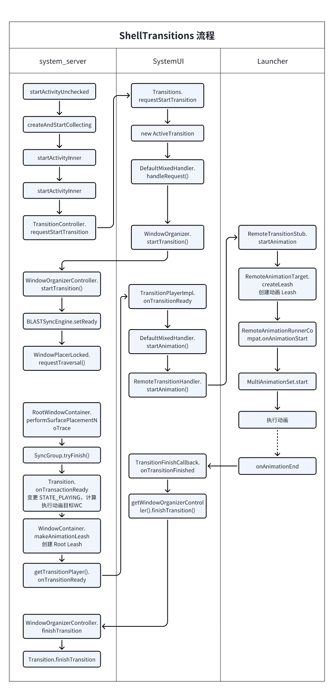
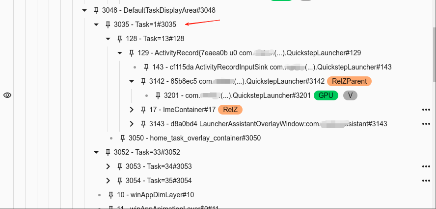
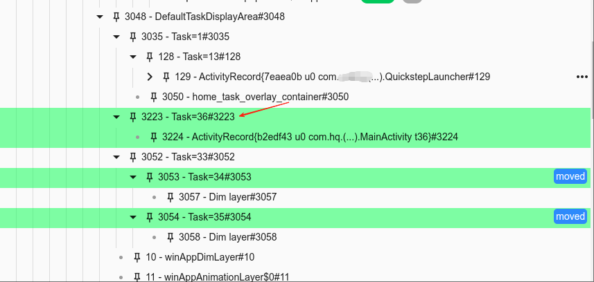
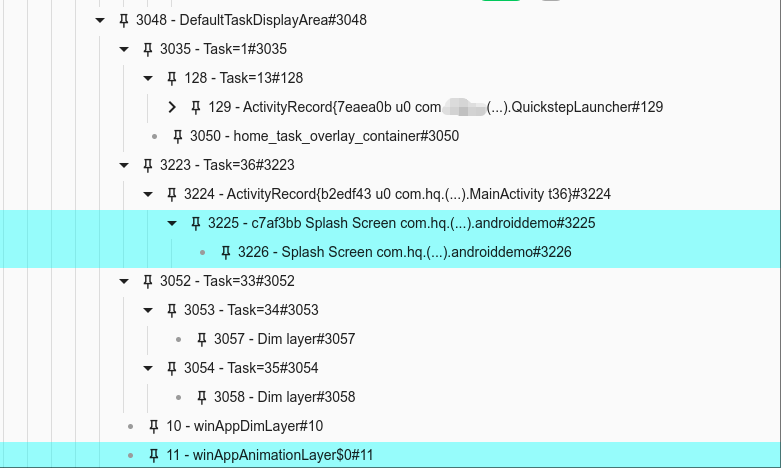
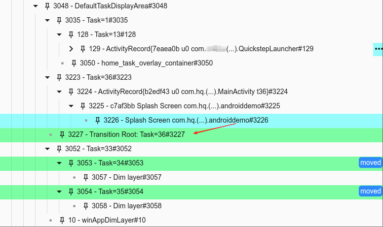
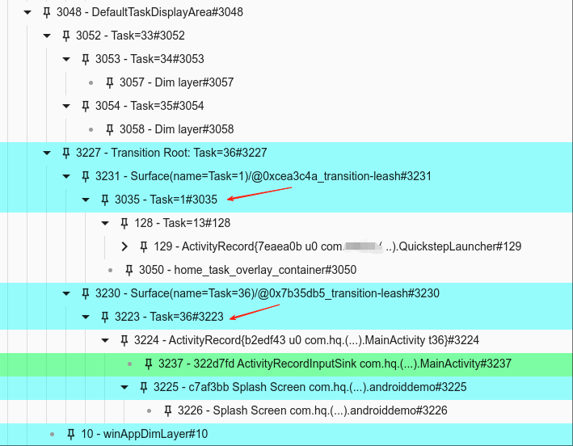
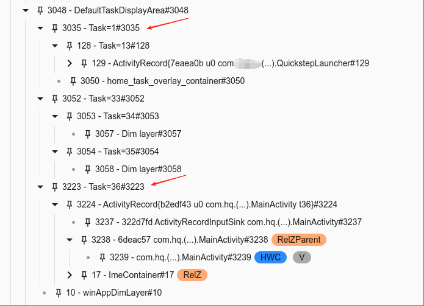

概述
从 Android 14 开始，Android 把涉及到动画这部分的逻辑统一成 ShellTransitions 来处理，用来代替以前的 AppTransition。
这里的 Shell 可以理解为 WMShell，表示在 SystemUI 侧执行的内容，Transition 表示过渡的意思。
以前的 AppTransition 过渡动画的所有逻辑都是在 system_server 进程执行，远程动画还涉及到比如 Launcher 等应用执行动画，而 ShellTransitions 不但涉及到 system_server，而且还涉及到 SystemUI 进程。system_server 只专注于窗口相关的策略管理，把执行动画的一些逻辑放在 SystemUI 进程。
本文基于桌面启动应用来分析 ShellTransition流程。
本文基于 Android 15 分析。
下面命令用于打开 ShellTransitions 相关的 ProtoLog 日志开关。
adb shell wm logging enable-text WM_DEBUG_WINDOW_TRANSITIONS WM_DEBUG_SYNC_ENGINE
adb shell dumpsys activity service SystemUIService WMShell protolog enable-text WM_SHELL_TRANSITIONS
编译
如果修改 WMShell 代码，然后重新编译 SystemUI 即可。
make SystemUI -j8
ShellTransitions 启用开关
// TransitionController
boolean isShellTransitionsEnabled() {
return !mTransitionPlayers.isEmpty();
}
void registerTransitionPlayer(@Nullable ITransitionPlayer player,
@Nullable WindowProcessController playerProc) {
......
mTransitionPlayers.add(new TransitionPlayerRecord(player, playerProc));
}
Transitions.onInit()
WindowOrganizer.registerTransitionPlayer // 注册 WMShell 端的 TransitionPlayerImpl
WindowOrganizerController.registerTransitionPlayer
-------> WMCore
TransitionController.registerTransitionPlayer
//Transitions.java
public static final boolean ENABLE_SHELL_TRANSITIONS = getShellTransitEnabled();
private void onInit() {
......
if (Transitions.ENABLE_SHELL_TRANSITIONS) {
mIsRegistered = true;
// Register this transition handler with Core
// 向 WMCore 注册 TransitionPlayerImpl
try {
mOrganizer.registerTransitionPlayer(mPlayerImpl);
} catch (RuntimeException e) {
mIsRegistered = false;
throw e;
}
// Pre-load the instance.
TransitionMetrics.getInstance();
}
...
}
private static boolean getShellTransitEnabled() {
try {
if (AppGlobals.getPackageManager().hasSystemFeature(
PackageManager.FEATURE_AUTOMOTIVE, 0)) {
return SystemProperties.getBoolean("persist.wm.debug.shell_transit", true);
}
} catch (RemoteException re) {
Log.w(TAG, "Error getting system features");
}
return true;
}
最后是查看 persist.wm.debug.shell_transit 这个属性的配置。
ShellTransition相关类
TransitionController
TransitionController 有点像之前的 AppTransitionController，是 WMCore 这边的过渡动画的控制器调度器之类的，控制过渡动画的生命周期。
// 等待开始的 Transition 队列
private final ArrayList<QueuedTransition> mQueuedTransitions = new ArrayList<>();
// 表示当前正在构建的 Transition，正在收集 target 中
private Transition mCollectingTransition = null;
// 已完成但仍等待参与者准备就绪的 Transition
final ArrayList<Transition> mWaitingTransitions = new ArrayList<>();
Transition
过渡动画在WMCore的代表类，它主要保持跟踪这WM状态到过渡动画状态，其内部定义了Transition可能处于的几个状态值，其成员变量mState保存了Transition当前所处的状态。
Transition 实现了 BLASTSyncEngine.TransactionReadyListener 接口，当它通过 BLASTSyncEngine.startSyncSet 注册到 BLASTSyncEngine 监听时，当窗口绘制完成后便会通过到 Transition.onTransactionReady 开始动画。
即最后状态都会体现在这个Transition类中的几个状态，默认状态是STATE_PENDING。
class Transition implements BLASTSyncEngine.TransactionReadyListener {
......
/** The transition has been created but isn't collecting yet. */
private static final int STATE_PENDING = -1;
/** The transition has been created and is collecting, but hasn't formally started. */
private static final int STATE_COLLECTING = 0;
/**
* The transition has formally started. It is still collecting but will stop once all
* participants are ready to animate (finished drawing).
*/
private static final int STATE_STARTED = 1;
/**
* This transition is currently playing its animation and can no longer collect or be changed.
*/
private static final int STATE_PLAYING = 2;
/**
* This transition is aborting or has aborted. No animation will play nor will anything get
* sent to the player.
*/
private static final int STATE_ABORT = 3;
/**
* This transition has finished playing successfully.
*/
private static final int STATE_FINISHED = 4;
@IntDef(prefix = { "STATE_" }, value = {
STATE_PENDING,
STATE_COLLECTING,
STATE_STARTED,
STATE_PLAYING,
STATE_ABORT,
STATE_FINISHED
})
private @TransitionState int mState = STATE_PENDING;
1）、STATE_PENDING，当Transition刚被创建的时候就是这个状态。
典型的是在各种需要动画的流程下调用TransitionController.createTransition来创建一个Transition对象。
2）、STATE_COLLECTING，当Transition开始收集动画参与者的时候，就会被置为这个状态。
一般创建完Transition后就会调用TransitionController.moveToCollecting，最终在 Transition.startCollecting中，Transition从STATE_PENDING状态切换到STATE_COLLECTING状态。
3）、STATE_STARTED，Transition已经被正式启动，它仍在收集中，但一旦所有参与者准备好进行动画（完成绘制），它将停止。结合STATE_COLLECTING，这里的意思应该就是说，如果Transition没有被start，那么它将一直处于收集参与者的状态，即使所有参与者都已经完成绘制可以开始动画了，但是因为当前Transition没有被启动，所以也无法进行下一步。
首先WMCore侧会在合适的时机调用TransitionController.requestStartTransition切换到WMShell，当WMShell侧也启动了一个ActiveTransition后，会调用WindowOrganizer.startTransition切换回WMCore侧，最终调用Transition.start，在Transition.start中Transition从STATE_COLLECTING状态切换到STATE_STARTED状态。
4）、STATE_PLAYING，Transition正在播放动画，并且不能再继续收集了，也不能被改变。也就是说此时谁谁谁要播放动画已经确定了，并且这些参与者已经开始播放动画了，所以就不能再去收集新的参与者了，而且也不能对当前Transition进行修改了。
当所有动画参与者都已经绘制完成，可以开始动画了，那么WMCore侧就会走到Transition.onTransactionReady，走到这一步就认为Transition已经就绪了，这里Transition将会从STATE_STARTED状态切换到STATE_PLAYING状态，然后调用ITransitionPlayer.onTransitionReady切换到WMShell。
5）、STATE_FINISHED，Transition已经成功播放完了动画。
WMShell侧主要负责播放动画，当WMShell侧播放动画完成后，会调用WindowOrganizer.finishTransition切换回WMCore侧，最终在Transition.finishTransition中，Transition从STATE_PLAYING状态切换到了STATE_FINISHED状态。
6）、STATE_ABORTED，Transition正在被中止或者已经中止，不会播放任何动画，也不会将任何内容发给player。
当调用Transition.abort方法，Transition的状态会被置为STATE_ABORTED，这个动作可能发生在任意时刻。
/** Only use for clean-up after binder death! */
private SurfaceControl.Transaction mStartTransaction = null;
private SurfaceControl.Transaction mFinishTransaction = null;
mStartTransaction 和 mFinishTransaction 参考后面章节的介绍。
// 当前 transition 动画的参与者，保存的是有哪些容器参与到当前动画中
final ArraySet<WindowContainer> mParticipants = new ArraySet<>();
Transitions
执行在 WMShell 侧，主要是处理过渡动画的播放。
在动画播放过程中，每个过渡动画都有个生命周期。
*
* Basically: --start--> PENDING --onTransitionReady--> READY --play--> ACTIVE --finish--> |
* --merge--> MERGED --^
- 当直接启动或请求过渡动画时，将其添加到“PENDING ”状态。
- 一旦 WMCore 应用过渡动画并发出通知，过渡动画就会转至“READY ”状态。
- 当过渡动画开始动画时，它会转至“ACTIVE ”状态。
READY 及以后的生命周期按 Track 进行管理。 在一 Track 中，所有动画都按描述的方式串行排列； 但是，多个 Track 可以同时播放。 这意味着，在一个轨道内，一次只能有一个过渡动画处于动画状态（“ACTIVE ”）。
当一个过渡动画在一个 Track 中进行动画时，分派到该 Track 的过渡动画将以 READY 状态排队等待轮到。 同时，每当过渡动画到达 READY 队列的头部时，它将尝试与 ACTIVE 状态的过渡动画合并。 如果合并成功，它将被移动到 ACTIVE 状态的过渡动画的 MERGED 列表，然后下一个 READY 状态的过渡动画可以尝试合并。 一旦 ACTIVE 状态的过渡动画完成，就可以播放下一个 READY 状态的过渡动画。
轨道分配由 WMCore 提供，这通常会尝试保持相同的分配。 但是，如果 WMCore 确定过渡动画与大于1个活动轨道冲突，则会将其标记为 SYNC。 这意味着在 SYNC 过渡动画可以播放之前，必须刷新所有当前活动的轨道。
/** List of possible handlers. Ordered by specificity (eg. tapped back to front). */
private final ArrayList<TransitionHandler> mHandlers = new ArrayList<>();
Track
/** Keeps track of transitions which are ready to play but still waiting for their turn. */
final ArrayList<ActiveTransition> mReadyTransitions = new ArrayList<>();
/** The currently playing transition in this track. */
ActiveTransition mActiveTransition = null;
定义了两个变量，mReadyTransitions 用于存储在 READY 状态等待 play 的 动画。
mActiveTransition 表示当前正在 play 状态的动画。
TransitionPlayerImpl
Transitions 的内部类，实现 ITransitionPlayer.Stub，和 WMCore 进程进行通信。
oneway interface ITransitionPlayer {
void onTransitionReady(in IBinder transitionToken, in TransitionInfo info,
in SurfaceControl.Transaction t, in SurfaceControl.Transaction finishT);
void requestStartTransition(in IBinder transitionToken, in TransitionRequestInfo request);
}
onTransitionReady: 当Transition的所有参与者准备好进行动画时调用。作为对startTransition方法的响应。
requestStartTransition: 当WMCore中的某些内容需要播放Transition时调用，例如在新Task中启动Activity时。
ActiveTransition
WMShell端的过渡动画实体类，很多核心逻辑是在 ActiveTransition 成员变量 TransitionInfo 中，和 WMCore 端的 Transition 对象靠 IBinder 类型的成员变量 mToken进行对应。
TransitionInfo
public final class TransitionInfo implements Parcelable {
// 存储了此次动画需要变更的对象，可能会有多个，比如Activity切换时伴随有 OPEN 和 CLOSE 动画。
private final ArrayList<Change> mChanges = new ArrayList<>();
用于传递一些 Transition 的变化信息到 TransitionPlayer。
注意和 TransitionRequestInfo 的区别。
TransitionInfo 主要用于描述一个 Transition 的状态信息。它包含了 Transition 的各种属性，如动画效果、持续时间等。TransitionInfo 通常用于在 WMShell 端处理 Transition 时使用，它描述了Transition的具体内容和状态。
TransitionHandler
TransitionHandler表示可以处理一组过渡动画的接口：
public interface TransitionHandler {
boolean startAnimation(@NonNull IBinder transition, @NonNull TransitionInfo info,
@NonNull SurfaceControl.Transaction startTransaction,
@NonNull SurfaceControl.Transaction finishTransaction,
@NonNull TransitionFinishCallback finishCallback);
default void mergeAnimation(@NonNull IBinder transition, @NonNull TransitionInfo info,
@NonNull SurfaceControl.Transaction t, @NonNull IBinder mergeTarget,
@NonNull TransitionFinishCallback finishCallback) { }
@Nullable
default TransitionHandler getHandlerForTakeover(
@NonNull IBinder transition, @NonNull TransitionInfo info) {
return null;
}
default boolean takeOverAnimation(@NonNull IBinder transition, @NonNull TransitionInfo info,
@NonNull SurfaceControl.Transaction transaction,
@NonNull TransitionFinishCallback finishCallback,
@NonNull WindowAnimationState[] states) {
return false;
}
@Nullable
WindowContainerTransaction handleRequest(@NonNull IBinder transition,
@NonNull TransitionRequestInfo request);
default void onTransitionConsumed(@NonNull IBinder transition, boolean aborted,
@Nullable SurfaceControl.Transaction finishTransaction) { }
default void setAnimScaleSetting(float scale) {}
}
实现类有：
- RemoteTransitionHandler：远程动画
- DefaultTransitionHandler：应用内切换动画
- KeyguardTransitionHandler：解锁相关动画
- DefaultMixedHandler：比如桌面打开应用动画
等
TransitionPlayerRecord
持有 WMShell 端的 TransitionPlayerImpl，承担 WMShell 和 WMCore 之间的通信。
TransitionRequestInfo
TransitionRequestInfo 是继承了 Parcelable 的类，用来将 WMCore 端的一些信息进行封装，发送给 WMShell 端。
当有动画场景时，WMCore 端会创建一个 TransitionRequestInfo 对象，并将其传递给 WMShell 端。WMShell 端接收到这个请求后，会创建一个 ActiveTransition 对象来处理这个请求，并根据需要启动相应的动画效果。
整体流程

Transition 动画图层分析
下面我们结合 WinScope 抓取的 SF 图层来分析一下 ShellTransition 过程。
ShellTransition 和以前 APPTransaction 的区别主要是：
ShellTransition 会创建一个 Transition Root 图层，作为动画图层的根图层，现在把桌面 Task 和启动应用的 Task 都挂载到这个 Leash 图层下面。
以前的动画图层名字为 “animation-leash of app_transition ”，只会挂载新启动应用的 Task。
启动应用前的图层如图所示，桌面所在的 Task = 1。

点击应用后，创建一个 Task = 36，挂载了新启动应用的 ActivityRecord。

新启动启动应用开始做 SplashScreen 动画。

创建 Transition Root 图层。

把桌面 Task 和启动应用 Task 都移动到该图层下面。
在做动画过程中，Transition Root 图层的属性没有任何的变化，动画改变的是启动应用 Task 所在的 Leash 图层。

动画完成后，移除 Transition Root 图层，桌面的 Task 和 应用 Task 重新移动到 DefaultTaskDisplayArea 下面。

流程介绍
具体的桌面启动应用流程参考前面的博客，这里只着重介绍 ShellTransition 相关部分。
桌面注册远程动画
// QuickstepTransitionManager.java
public void registerRemoteTransitions() {
mLauncherOpenTransition = new RemoteTransition(
new LauncherAnimationRunner(mHandler, mWallpaperOpenTransitionRunner,
false /* startAtFrontOfQueue */).toRemoteTransition(),
mLauncher.getIApplicationThread(), "QuickstepLaunchHome");
------> systemui
Transitions.IShellTransitionsImpl.registerRemote
ExternalInterfaceBinder.executeRemoteCallWithTaskPermission
启动应用开始准备动画
前期的动画准备工作。
ActivityStarter.startActivityUnchecked()
// 创建类型为 TRANSIT_OPEN 的 Transition 对象
TransitionController.createAndStartCollecting()
new Transition // 创建 Transition
TransitionController.moveToCollecting()
Transition.startCollecting()
mState = STATE_COLLECTING // 修改状态为 STATE_COLLECTING
BLASTSyncEngine.startSyncSet()
BLASTSyncEngine.prepareSyncSet()
new SyncGroup()
BLASTSyncEngine.startSyncSet()
//将当前SyncGroup添加到成员变量mActiveSyncs中
BLASTSyncEngine.mActiveSyncs.add(SyncGroup)
`WindowManager: SyncGroup **: Started for listener:` // 重要日志
BLASTSyncEngine.scheduleTimeout() // 设置超时
// 将当前启动的ActivityRecord收集到刚刚创建的Transition对象中。
TransitionController.collect()
Transition.collect()
BLASTSyncEngine.addToSyncSet()
BLASTSyncEngine.SyncGroup.addToSync()
`WindowManager: SyncGroup **: Adding to group:` // 重要日志
// 添加到 mRootMembers
mRootMembers.add(wc);
WindowContainer.prepareSync()
// 修改同步状态为 SYNC_STATE_READY
mSyncState = SYNC_STATE_READY;
new ChangeInfo()
// Transition中的变量，过渡动画参与者的集合
mParticipants.add(wc)
// 走具体的启动Activity流程。
ActivityStarter.startActivityInner()
// 添加 StartingWindow 流程
StartingSurfaceController.showStartingWindow
//调用TransitionController.requestStartTransition来启动动画。
ActivityStarter.handleStartResult()
TransitionController.collectExistenceChange()
Transition.collectExistenceChange()
TransitionController.requestStartTransition()
// 这里判断一下mIsWaitingForDisplayEnabled，一般不走这里
WindowOrganizerController.startTransition()
Transition.start()
// else
// 创建 TransitionRequestInfo
new TransitionRequestInfo
TransitionPlayerRecord.ITransitionPlayer.requestStartTransition
// --------> WMShell
Transitions.TransitionPlayerImpl.requestStartTransition()
Transitions.requestStartTransition()
// 创建一个 ActiveTransition
new ActiveTransition
// 循环遍历所有的 TransitionHandler
// 找出可以执行此动画的 TransitionHandler，并保存在 ActiveTransition
// 这找到的时 DefaultMixedHandler
for (int i = mHandlers.size() - 1; i >= 0; --i)
DefaultMixedHandler.handleRequest()
Transitions.dispatchRequest()
RemoteTransitionHandler.handleRequest()
new WindowContainerTransaction()
DefaultMixedHandler.createDefaultMixedTransition()
new DefaultMixedTransition()
DefaultMixedHandler.mLeftoversHandler = RemoteTransitionHandler
mActiveTransitions.add(mixed)
WindowOrganizer.startTransition()
IWindowOrganizerController.startTransition()
// -------> WMCore
WindowOrganizerController.startTransition()
Transition.start()
// 修改状态为 STATE_STARTED，已经收集准备好，
// 等绘制完成就可以执行动画了
mState = STATE_STARTED
Transition.applyReady()
BLASTSyncEngine.setReady()
//设置同步组准备状态(true)
SyncGroup.setReady
mReady = ready
WindowPlacerLocked.requestTraversal()
WindowOrganizerController.applyTransaction
// 如果有 WindowContainerTransaction.Change 就apply
绘制完成启动动画
准备工作完成，当参与动画的所有窗口绘制完成时，可以开启动画了。
RootWindowContainer.performSurfacePlacementNoTrace()
BLASTSyncEngine.onSurfacePlacement()
BLASTSyncEngine.SyncGroup.tryFinish()
`WindowManager: SyncGroup ** : onSurfacePlacement checking` // 重要日志
// 检查是否 同步/绘制 完成
ActivityRecord.isSyncFinished()
WindowContainer.isSyncFinished()
`WindowManager: SyncGroup **: Unfinished container` // 重要日志
BLASTSyncEngine.SyncGroup.finishNow()
`WindowManager: SyncGroup **: Finished!` // 重要日志
WindowContainer.finishSync()
// 执行合并操作
Transaction.merge(mSyncTransaction)
Transition.onTransactionReady()
Transition.commitVisibleActivities()
ActivityRecord.commitVisibility()
ActivityRecord.setVisible()
ActivityRecord.commitFinishDrawing()
WindowState.commitFinishDrawing()
WindowStateAnimator.prepareSurfaceLocked()
// 设置 Surface 可见
WindowSurfaceController.setShown()
WindowSurfaceController.showRobustly()
SurfaceControl.Transaction.show()
// 计算动画目标
Transition.calculateTargets()
// 动画层级提升
Transition.tryPromote()
//状态判断
if(mState == STATE_ABORT) return
if(mState == STATE_FINISHED) return
mState = STATE_PLAYING // 修改状态为 STATE_PLAYING
mStartTransaction = transaction // 把 merge 赋值给 mStartTransaction
Transition.calculateTransitionInfo()
// 构建TransitionInfo对象
new TransitionInfo()
//
Transition.calculateTransitionRoots()
//创建 Transition Root Leash
WindowContainer.makeAnimationLeash().build()
// 管理窗口层级
Transition.assignLayers()
DisplayContent.assignChildLayers()
for 循环参与此次动画的 Target {
// 为每个 Target 创建 Change
new TransitionInfo.Change()
// 获取用于挂载到 Leash 的图层
Transition.getLeashSurface()
// 设置该 Change 的动画类型
Change.setMode()
TransitionInfo.addChange()
}
TransitionController.assignTrack()
// 分屏 Track
TransitionInfo.setTrack()
TransitionController.moveToPlaying()
mPlayingTransitions.add(transition)
// 动画结束后重置属性
Transition.buildFinishTransaction(mFinishTransaction, info);
TransitionController.getTransitionPlayer().onTransitionReady()
// WMCore ----> WMShell
Transitions.TransitionPlayerImpl.onTransitionReady
Transitions.onTransitionReady()
// 获取前面创建的 ActiveTransition，并把从wmcore传递过来的一些参数配置给 ActiveTransition，比如 TransitionInfo
ActiveTransition active = mPendingTransitions.remove(activeIdx);
active.mInfo = TransitionInfo
Transitions.dispatchReady()
// 分配一个 Track
Transitions.getOrCreateTrack()
// 根据 trackId 来决定是新建一个 Track 还是使用原有 Track。
mTracks.get(trackId)
// 设置动画初始状态的可见性、透明度和变换。
Transitions.setupStartState()
`ShellTransitions: Transitions setupStartState change` // 重要日志
`ShellTransitions: Transitions setupStartState mode =`// 重要日志
Transitions.processReadyQueue()
// 为 Track 的 mActiveTransition 赋值
track.mActiveTransition = ready;
Transitions.playTransition()
//将动画参与者reparent到一个共同的父Layer上，然后设置它们的Z轴层级
Transitions.setupAnimHierarchy()
SurfaceControl.Transaction.reparent
// 计算层级顺序
Transitions.calculateAnimLayer()
SurfaceControl.Transaction.setLayer
// 构造回调函数 TransitionFinishCallback，在动画执行完毕后回调
Transitions.TransitionFinishCallback
DefaultMixedHandler.startAnimation()
DefaultMixedTransition.startAnimation()
DefaultMixedTransition.animateOpenIntentWithRemoteAndPip()
DefaultMixedTransition.tryAnimateOpenIntentWithRemoteAndPip()
RemoteTransitionHandler.startAnimation()
RemoteTransition.getRemoteTransition().startAnimation()
// ------> Launcher，传入 IRemoteTransitionFinishedCallback
RemoteAnimationRunnerCompat.RemoteTransitionStub.startAnimation()
RemoteAnimationTargetCompat.wrapApps()
RemoteAnimationTargetCompat.wrap()
TransitionUtil.newTarget()
// 创建用来动画的 Leash
TransitionUtil.createLeash()
// _transition-leash
new SurfaceControl.Builder().build()
// 设置leash的层级
TransitionUtil.setupLeash()
SurfaceControl.Transaction.apply() // 执行前面配置的 mStartT Transaction
RemoteAnimationRunnerCompat.onAnimationStart()
LauncherAnimationRunner.onAnimationStart()
QuickstepTransitionManager.AppLaunchAnimationRunner.onAnimationStart()
QuickstepTransitionManager.composeIconLaunchAnimator()
MultiAnimationSet.play()
LauncherAnimationRunner$AnimationResult.setAnimation()
MultiAnimationSet.start()
RectFSpringAnim.start()
SpringAnimation.addEndListener
maybeOnEnd()
LauncherAnimationRunner.AnimationResult.finish()
mASyncFinishRunnable.run()
RemoteAnimationRunnerCompat.wrap.RemoteTransitionStub().startAnimation().animationFinishedCallback
IRemoteTransitionFinishedCallback.onTransitionFinished
// -------> WMShell
看下面的分析
// 这里是需要 merge动画的情形，如果 Track 有已经ready的ActiveTransition，那么就需要合并
// 这部分 TransitionHandler 中每个有自己的实现
// 这种情况的多动画处理场景另外文章中介绍
TransitionHandler.mergeAnimation()
// `WindowManager: Sent Transition (#13733) createdAt=` // 关键日志
动画执行完毕
当桌面执行完动画，执行 onTransitionFinished 回调到 WMShell 执行 mFinishT。然后回调到 WMCore ，执行 finishTransition()。
// ------> WMShell
IRemoteTransitionFinishedCallback.onTransitionFinished
Transitions.TransitionFinishCallback.onTransitionFinished // startAnimation 时注册
Transitions.onFinish
// 执行 mFinishT
active.mFinishT.apply()
WindowOrganizer.finishTransition()
getWindowOrganizerController().finishTransition()
// ------> WMCore
WindowOrganizerController.finishTransition()
// 如果 WindowContainerTransaction Change等操作，就 apply
WindowOrganizerController.applyTransaction()
TransitionController.finishTransition()
mTrackCount = 0
Transition.finishTransition()
// `Finish Transition (#` // 关键日志
for (int i = 0; i < mParticipants.size(); ++i)
// 遍历动画参与者，修改ActivityRecord可见性
ActivityRecord.commitVisibility
ActivityRecord.setVisible
ActivityRecord.setVisibleRequested
mState = STATE_FINISHED // 修改状态为 STATE_FINISHED
流程分析
这里以从桌面启动 Activity 这个场景来分析一下 Transition 动画的执行流程。
// ActivityStarter.java
private int startActivityUnchecked(final ActivityRecord r, ActivityRecord sourceRecord,
IVoiceInteractionSession voiceSession, IVoiceInteractor voiceInteractor,
int startFlags, ActivityOptions options, Task inTask,
TaskFragment inTaskFragment,
BalVerdict balVerdict,
NeededUriGrants intentGrants, int realCallingUid) {
int result = START_CANCELED;
final Task startedActivityRootTask;
// Create a transition now to record the original intent of actions taken within
// startActivityInner. Otherwise, logic in startActivityInner could start a different
// transition based on a sub-action.
// Only do the create here (and defer requestStart) since startActivityInner might abort.
final TransitionController transitionController = r.mTransitionController;
Transition newTransition = transitionController.isShellTransitionsEnabled()
? transitionController.createAndStartCollecting(TRANSIT_OPEN) : null;
RemoteTransition remoteTransition = r.takeRemoteTransition();
// Create a display snapshot as soon as possible.
if (newTransition != null && mRequest.freezeScreen) {
final TaskDisplayArea tda = mLaunchParams.hasPreferredTaskDisplayArea()
? mLaunchParams.mPreferredTaskDisplayArea
: mRootWindowContainer.getDefaultTaskDisplayArea();
final DisplayContent dc = mRootWindowContainer.getDisplayContentOrCreate(
tda.getDisplayId());
if (dc != null) {
transitionController.collect(dc);
transitionController.collectVisibleChange(dc);
}
}
try {
mService.deferWindowLayout();
transitionController.collect(r);
try {
Trace.traceBegin(Trace.TRACE_TAG_WINDOW_MANAGER, "startActivityInner");
result = startActivityInner(r, sourceRecord, voiceSession, voiceInteractor,
startFlags, options, inTask, inTaskFragment, balVerdict,
intentGrants, realCallingUid);
} catch (Exception ex) {
Slog.e(TAG, "Exception on startActivityInner", ex);
} finally {
Trace.traceEnd(Trace.TRACE_TAG_WINDOW_MANAGER);
startedActivityRootTask = handleStartResult(r, options, result, newTransition,
remoteTransition);
}
} finally {
mService.continueWindowLayout();
}
postStartActivityProcessing(r, result, startedActivityRootTask);
return result;
}
ActivityStarter.startActivityUnchecked的主要内容为：
- 首先调用TransitionController.createAndStartCollecting方法创建一个类型为TRANSIT_OPEN的Transition对象。
- 将当前启动的ActivityRecord收集到刚刚创建的Transition对象中。
- 调用ActivityStarter.startActivityInner去走具体的启动Activity流程。
- 最后在ActivityStarter.handleStartResult中，调用TransitionController.requestStartTransition来启动动画。
前期准备工作和收集动画参与者
创建Transition
Transition createAndStartCollecting(int type) {
if (mTransitionPlayers.isEmpty()) {
return null;
}
if (!mQueuedTransitions.isEmpty()) {
// There is a queue, so it's not possible to start immediately
return null;
}
if (mSyncEngine.hasActiveSync()) {
if (isCollecting()) {
// Check if we can run in parallel here.
if (canStartCollectingNow(null /* transit */)) {
// create and collect in parallel.
ProtoLog.v(ProtoLogGroup.WM_DEBUG_WINDOW_TRANSITIONS_MIN, "Moving #%d from"
+ " collecting to waiting.", mCollectingTransition.getSyncId());
mWaitingTransitions.add(mCollectingTransition);
mCollectingTransition = null;
Transition transit = new Transition(type, 0 /* flags */, this, mSyncEngine);
moveToCollecting(transit);
return transit;
}
} else {
Slog.w(TAG, "Ongoing Sync outside of transition.");
}
return null;
}
Transition transit = new Transition(type, 0 /* flags */, this, mSyncEngine);
moveToCollecting(transit);
return transit;
}
创建一个 Transition，由于 Transition 初始状态就是 STATE_PENDING，不用再次设置。
Transition 设置 COLLECTING状态
// Transition.java
void startCollecting(long timeoutMs) {
if (mState != STATE_PENDING) {
throw new IllegalStateException("Attempting to re-use a transition");
}
mState = STATE_COLLECTING;
mSyncId = mSyncEngine.startSyncSet(this, timeoutMs,
TAG + "-" + transitTypeToString(mType),
mParallelCollectType != PARALLEL_TYPE_NONE);
mSyncEngine.setSyncMethod(mSyncId, TransitionController.SYNC_METHOD);
mLogger.mSyncId = mSyncId;
mLogger.mCollectTimeNs = SystemClock.elapsedRealtimeNanos();
}
首先将当前Transition的状态标记为 STATE_COLLECTING，接着通过BLASTSyncEngine.startSyncSet方法，创建一个 SyncGroup，用来收集动画的参与者。
SyncGroup 用来保存当前有哪些WindowContainer参与到了动画当中，它的final ArraySet<WindowContainer> mRootMembers = new ArraySet<>(); 变量保存了参与动画的WindowContainer的集合。
// BLASTSyncEngine.java
int startSyncSet(TransactionReadyListener listener, long timeoutMs, String name,
boolean parallel) {
final SyncGroup s = prepareSyncSet(listener, name);
startSyncSet(s, timeoutMs, parallel);
return s.mSyncId;
}
SyncGroup prepareSyncSet(TransactionReadyListener listener, String name) {
return new SyncGroup(listener, mNextSyncId++, name);
}
void startSyncSet(SyncGroup s, long timeoutMs, boolean parallel) {
final boolean alreadyRunning = mActiveSyncs.size() > 0;
......
mActiveSyncs.add(s);
// For now, parallel implies this.
s.mIgnoreIndirectMembers = parallel;
.......
// 设置同步超时，超时会强制结束同步
scheduleTimeout(s, timeoutMs);
}
调用BLASTSyncEngine.prepareSyncSet来创建一个SyncGroup。
调用BLASTSyncEngine.startSyncSet来将当前SyncGroup添加到成员变量mActiveSyncs中，用来跟踪现在有多少个SyncGroup在同时进行收集的操作。
请求启动 Transition
private @Nullable Task handleStartResult(@NonNull ActivityRecord started,
ActivityOptions options, int result, Transition newTransition,
RemoteTransition remoteTransition) {
......
// Transition housekeeping.
final TransitionController transitionController = started.mTransitionController;
final boolean isStarted = result == START_SUCCESS || result == START_TASK_TO_FRONT;
......
if (isStarted) {
// The activity is started new rather than just brought forward, so record it as an
// existence change.
transitionController.collectExistenceChange(started);
} else if (result == START_DELIVERED_TO_TOP && newTransition != null
......
}
......
if (newTransition != null) {
transitionController.requestStartTransition(newTransition,
mTargetTask == null ? started.getTask() : mTargetTask,
remoteTransition, null /* displayChange */);
} else if (result == START_SUCCESS && mStartActivity.isState(RESUMED)) {
......
} else if (isStarted) {
// Make the collecting transition wait until this request is ready.
transitionController.setReady(started, false);
}
return startedActivityRootTask;
}
// Transition.java
void collectExistenceChange(@NonNull WindowContainer wc) {
if (mCollectingTransition == null) return;
mCollectingTransition.collectExistenceChange(wc);
}
void collectExistenceChange(@NonNull WindowContainer wc) {
if (mState >= STATE_PLAYING) {
// Too late to collect. Don't check too-early here since `collect` will check that.
return;
}
ProtoLog.v(ProtoLogGroup.WM_DEBUG_WINDOW_TRANSITIONS, "Existence Changed in transition %d:"
+ " %s", mSyncId, wc);
collect(wc);
mChanges.get(wc).mExistenceChanged = true;
}
将从正在收集的这个 Transition的mChanges 中找到这个 ActivityRecord 的 ChangeInfo 对象，将其成员变量 mExistenceChanged 置为 true，表示这 个WindowContainer 在本次改变前后的存在性发生了变化，即从无到有（OPEN），或者从有到无（CLOSE）。
接下来 WMCore 向Player（WMShell）端创建一个 Transition，但是不要启动。
Transition requestStartTransition(@NonNull Transition transition, @Nullable Task startTask,
@Nullable RemoteTransition remoteTransition,
@Nullable TransitionRequestInfo.DisplayChange displayChange) {
......
// 1.创建一个TransitionRequestInfo对象：
final TransitionRequestInfo request = new TransitionRequestInfo(transition.mType,
startTaskInfo, pipTaskInfo, remoteTransition, displayChange,
transition.getFlags(), transition.getSyncId());
transition.mLogger.mRequestTimeNs = SystemClock.elapsedRealtimeNanos();
transition.mLogger.mRequest = request;
// 2.调用 mPlayer 的requestStartTransition方法，调到 WMShell 端
mTransitionPlayers.getLast().mPlayer.requestStartTransition(
transition.getToken(), request);
if (remoteTransition != null) {
transition.setRemoteAnimationApp(remoteTransition.getAppThread());
}
} catch (RemoteException e) {
Slog.e(TAG, "Error requesting transition", e);
transition.start();
}
return transition;
}
WMShell 端：
private class TransitionPlayerImpl extends ITransitionPlayer.Stub {
@Override
public void onTransitionReady(IBinder iBinder, TransitionInfo transitionInfo,
SurfaceControl.Transaction t, SurfaceControl.Transaction finishT)
throws RemoteException {
mMainExecutor.execute(() -> Transitions.this.onTransitionReady(
iBinder, transitionInfo, t, finishT));
}
@Override
public void requestStartTransition(IBinder iBinder,
TransitionRequestInfo request) throws RemoteException {
mMainExecutor.execute(() -> Transitions.this.requestStartTransition(iBinder, request));
}
}
void requestStartTransition(@NonNull IBinder transitionToken,
@Nullable TransitionRequestInfo request) {
......
// 创建 ActiveTransition
final ActiveTransition active = new ActiveTransition(transitionToken);
mKnownTransitions.put(transitionToken, active);
WindowContainerTransaction wct = null;
// If we have sleep, we use a special handler and we try to finish everything ASAP.
if (request.getType() == TRANSIT_SLEEP) {
mSleepHandler.handleRequest(transitionToken, request);
active.mHandler = mSleepHandler;
} else {
// 遍历所有的 TransitionHandler，
for (int i = mHandlers.size() - 1; i >= 0; --i) {
wct = mHandlers.get(i).handleRequest(transitionToken, request);
// 如果找到了可以处理这个动画的 TransitionHandler就跳出循环，保存到 ActiveTransition 中
// 在 onTransitionReady流程会调用
if (wct != null) {
active.mHandler = mHandlers.get(i);
break;
}
}
if (request.getDisplayChange() != null) {
TransitionRequestInfo.DisplayChange change = request.getDisplayChange();
if (change.getEndRotation() != change.getStartRotation()) {
// Is a rotation, so dispatch to all displayChange listeners
if (wct == null) {
wct = new WindowContainerTransaction();
}
// 触发相关 listener 的onDisplayChange 回调
mDisplayController.onDisplayRotateRequested(wct, change.getDisplayId(),
change.getStartRotation(), change.getEndRotation());
}
}
}
final boolean isOccludingKeyguard = request.getType() == TRANSIT_KEYGUARD_OCCLUDE
|| ((request.getFlags() & TRANSIT_FLAG_KEYGUARD_OCCLUDING) != 0);
if (isOccludingKeyguard && request.getTriggerTask() != null
&& request.getTriggerTask().getWindowingMode() == WINDOWING_MODE_FREEFORM) {
// This freeform task is on top of keyguard, so its windowing mode should be changed to
// fullscreen.
if (wct == null) {
wct = new WindowContainerTransaction();
}
wct.setWindowingMode(request.getTriggerTask().token, WINDOWING_MODE_FULLSCREEN);
wct.setBounds(request.getTriggerTask().token, null);
}
// 来启动一个已经创建的Transition，调到 WMCore
mOrganizer.startTransition(transitionToken, wct != null && wct.isEmpty() ? null : wct);
// 将这个创建的ActiveTransition对象添加到成员变量mPendingTransitions中
mPendingTransitions.add(0, active);
}
然后流程又执行到了 WMCore 这边。
void start() {
......
mState = STATE_STARTED;
......
applyReady();
mLogger.mStartTimeNs = SystemClock.elapsedRealtimeNanos();
mController.updateAnimatingState();
}
//BLASTSyncEngine.java
private boolean setReady(boolean ready) {
if (mReady == ready) {
return false;
}
ProtoLog.v(WM_DEBUG_SYNC_ENGINE, "SyncGroup %d: Set ready %b", mSyncId, ready);
mReady = ready;
if (ready) {
mWm.mWindowPlacerLocked.requestTraversal();
}
return true;
}
将 mState 状态设置为 STATE_STARTED，表示动画收集工作已经做好，等绘制完成就可以执行动画了。
小结：
这部分启动Transition的流程其实就是在 WMCore 端创建了一个 Transition对象，然后需要在 WMShell 侧创建一个 相应的ActiveTransition。创建完成后再告诉 WMCore WMShell 这边的准备工作完成了，将状态修改为 STATE_STARTED，SyncGroup标记为ready。
SyncEngine 同步检测窗口
ShellTransitions之前，检查动画是否可以开始的逻辑是在AppTransitionController.handleAppTransitionReady中，通过调用transitionGoodToGo来检查窗口是否绘制完成的，现在则是在BLASTSyncEngine.onSurfacePlacement中，通过调用BLASTSyncEngine.SyncGroup.tryFinish不断检查所有动画参与者是否已经全部同步完毕。一旦所有的动画参与者完成同步，则视为SyncGroup完成，或者说Transition就绪，就会调用BLASTSyncEngine.SyncGroup.finishNow，最终走到Transition.onTransactionReady，具体的调用堆栈参考前面的流程图。
void performSurfacePlacementNoTrace() {
mWmService.mSyncEngine.onSurfacePlacement();
}
void onSurfacePlacement() {
if (mActiveSyncs.isEmpty()) return;
// 前面创建 Transition的时候，也会创建一个SyncGroup，来收集参与动画的WindowContainer，
// 创建的SyncGroup则保存在了BLASTSyncEngine.mActiveSyncs。
mTmpFinishQueue.addAll(mActiveSyncs);
int visitBounds = ((mActiveSyncs.size() + 1) * mActiveSyncs.size()) / 2;
while (!mTmpFinishQueue.isEmpty()) {
if (visitBounds <= 0) {
Slog.e(TAG, "Trying to finish more syncs than theoretically possible. This "
+ "should never happen. Most likely a dependency cycle wasn't detected.");
}
--visitBounds;
final SyncGroup group = mTmpFinishQueue.remove(0);
final int grpIdx = mActiveSyncs.indexOf(group);
// Skip if it's already finished:
if (grpIdx < 0) continue;
if (!group.tryFinish()) continue;
......
}
}
private boolean tryFinish() {
// 前面的准备工作完成后已经把 mReady 置为true
if (!mReady) return false;
ProtoLog.v(WM_DEBUG_SYNC_ENGINE, "SyncGroup %d: onSurfacePlacement checking %s",
mSyncId, mRootMembers);
if (!mDependencies.isEmpty()) {
......
return false;
}
// mRootMembers保存了参与动画的WindowContainer
for (int i = mRootMembers.size() - 1; i >= 0; --i) {
final WindowContainer wc = mRootMembers.valueAt(i);
// 调用 isSyncFinished 来检查 WindowContainer 是否完成同步/绘制
// 如果有一个 WindowContainer 没有完成，那么就返回 false
if (!wc.isSyncFinished(this)) {
......
return false;
}
}
finishNow();
return true;
}
现在来看一下 WindowContainer.isSyncFinished 来检查 WindowContainer 是否完成同步/绘制的这个逻辑。
在把WindowContainer添加SyncGroup的时候，会为每一个 WindowContainer 调用prepareSync方法。
WindowState类型的WindowContainer，其mSyncState被置为SYNC_STATE_WAITING_FOR_DRAW。
// WindowState.java
boolean prepareSync() {
.......
mSyncState = SYNC_STATE_WAITING_FOR_DRAW;
......
return true;
}
非WindowState类型的WindowContainer，其 mSyncState 被置 SYNC_STATE_READY。因为窗口没有可以绘制的内容，所以就是已经完成同步。
// WindowContainer.java
boolean prepareSync() {
if (mSyncState != SYNC_STATE_NONE) {
// Already part of sync
return false;
}
for (int i = getChildCount() - 1; i >= 0; --i) {
final WindowContainer child = getChildAt(i);
child.prepareSync();
}
mSyncState = SYNC_STATE_READY;
return true;
}
isSyncFinished 判断
再看 isSyncFinished
对于非WindowState类型的WindowContainer来说，mSyncState一开始就被设置为了SYNC_STATE_READY，因此它们主要是检查它们的mChildren是否同步完成。
// ActivityRecord.java
boolean isSyncFinished(BLASTSyncEngine.SyncGroup group) {
if (task != null && task.mSharedStartingData != null) {
final WindowState startingWin = task.topStartingWindow();
if (startingWin != null && startingWin.mSyncState == SYNC_STATE_READY
&& mDisplayContent.mUnknownAppVisibilityController.allResolved()) {
// The sync is ready if a drawn starting window covered the task.
return true;
}
}
if (!super.isSyncFinished(group)) return false;
if (mDisplayContent != null && mDisplayContent.mUnknownAppVisibilityController
.isVisibilityUnknown(this)) {
return false;
}
if (!isVisibleRequested()) return true;
if (mPendingRelaunchCount > 0) return false;
// Wait for attach. That is the earliest time where we know if there will be an associated
// display rotation. If we don't wait, the starting-window can finishDrawing first and
// cause the display rotation to end-up in a following transition.
if (!isAttached()) return false;
// If visibleRequested, wait for at-least one visible child.
for (int i = mChildren.size() - 1; i >= 0; --i) {
if (mChildren.get(i).isVisibleRequested()) {
return true;
}
}
return false;
}
// WindowContainer.java
boolean isSyncFinished(BLASTSyncEngine.SyncGroup group) {
// 如果一个窗口不可见，那么视为同步完成，因为它不需要绘制，就不用等等绘制完成
if (!isVisibleRequested()) {
return true;
}
if (mSyncState == SYNC_STATE_NONE && getSyncGroup() != null) {
Slog.i(TAG, "prepareSync in isSyncFinished: " + this);
prepareSync();
}
// 如果状态是 SYNC_STATE_WAITING_FOR_DRAW，表示还没有绘制完成
if (mSyncState == SYNC_STATE_WAITING_FOR_DRAW) {
return false;
}
// 本身 Ready 了，那么检查它的孩子们
for (int i = mChildren.size() - 1; i >= 0; --i) {
final WindowContainer child = mChildren.get(i);
final boolean childFinished = group.isIgnoring(child) || child.isSyncFinished(group);
if (childFinished && child.isVisibleRequested() && child.fillsParent()) {
// Any lower children will be covered-up, so we can consider this finished.
return true;
}
if (!childFinished) {
return false;
}
}
return true;
}
从上面来看，检查窗口是否同步完成的一个标准就是 mSyncState是否是SYNC_STATE_READY。
那么 mSyncState 在什么时候被设置为 SYNC_STATE_READY 的呢？
boolean onSyncFinishedDrawing() {
if (mSyncState == SYNC_STATE_NONE) return false;
mSyncState = SYNC_STATE_READY;
mSyncMethodOverride = BLASTSyncEngine.METHOD_UNDEFINED;
ProtoLog.v(WM_DEBUG_SYNC_ENGINE, "onSyncFinishedDrawing %s", this);
return true;
}
调用堆栈如下：
Session.finishDrawing()
WindowManagerService.finishDrawingWindow()
WindowState.finishDrawing()
WindowContainer.onSyncFinishedDrawing()
mSyncState = SYNC_STATE_READY
当窗口完成绘制时，会调用WindowState.finishDrawing，进而将WindowState的mSyncState设置为SYNC_STATE_READY。
合并Transaction
// BLASTSyncEngine.java
private void finishNow() {
...
SurfaceControl.Transaction merged = mWm.mTransactionFactory.get();
if (mOrphanTransaction != null) {
merged.merge(mOrphanTransaction);
}
for (WindowContainer wc : mRootMembers) {
wc.finishSync(merged, this, false /* cancel */);
}
// WindowContainer.java
void finishSync(Transaction outMergedTransaction, @Nullable BLASTSyncEngine.SyncGroup group,
boolean cancel) {
......
// 将WindowContainer.mSyncTransaction中收集到的对当前WindowContainer对应的SurfaceControl的修改（同步操作）合并到传参outMergedTransaction中，
// 即我们上面提到的SyncGroup.finishNow中的局部变量merged。
outMergedTransaction.merge(mSyncTransaction);
// 递归调用所有子WindowContainer的finishSync方法
// 最终的结果是将这个WindowContainer以及所有子WindowContainer的同步操作都收集到传参outMergedTransaction中。
for (int i = mChildren.size() - 1; i >= 0; --i) {
mChildren.get(i).finishSync(outMergedTransaction, group, cancel);
}
if (cancel && mSyncGroup != null) mSyncGroup.onCancelSync(this);
mSyncState = SYNC_STATE_NONE;
mSyncMethodOverride = BLASTSyncEngine.METHOD_UNDEFINED;
mSyncGroup = null;
}
上面的代码构造了一个局部 Transaction 变量 merged，它将所有参与动画的 WindowContainer，将它们在动画期间发生的 mSyncTransaction 操作都合并到这个局部变量 merged 中。
那么怎么理解这个 mSyncTransaction 呢？
我们指的，调用Transaction.show的时候，只是将对SurfaceControl的操作暂存在了Transaction中（更准确的说，是native层的layer_state_t结构体中），只有当调用Transaction.apply的时候，这个对SurfaceControl的操作才算真正提交到了SurfaceFlinger端，进而作用到了Layer上。
那么这里为了保证所有的绘制能够统一显示，创建一个统一的Transaction对象（即SyncGroup.finishNow中创建的那个 Transaction 类型的局部变量merged），来收集所有参与到分屏的SurfaceControl的变化，并且只有等到所有参与分屏的窗口都绘制完成后，才对这个Transaction对象调用apply方法，这样就保证了所有的SurfaceControl变化在一次Transaction.apply中进行了提交。
在 WindowState 提交显示时：
WindowState.prepareSurfaces
WindowStateAnimator.prepareSurfaces
WindowSurfaceController.showRobustly
// WindowState.java
void prepareSurfaces() {
mIsDimming = false;
if (mHasSurface) {
if (!Dimmer.DIMMER_REFACTOR) {
applyDims();
}
updateSurfacePositionNonOrganized();
// Send information to SurfaceFlinger about the priority of the current window.
updateFrameRateSelectionPriorityIfNeeded();
updateScaleIfNeeded();
mWinAnimator.prepareSurfaceLocked(getSyncTransaction());
if (Dimmer.DIMMER_REFACTOR) {
applyDims();
}
}
super.prepareSurfaces();
}
这里调用了 getSyncTransaction()
WindowContainer.mSyncTransactionCommitCallbackDepth大于0，或者WindowContainer.mSyncTransaction不为SYNC_STATE_NONE，说明此时WindowContainer仍然处于需要同步的场景中，因此返回WindowContainer.mSyncTransaction，否则返回WindowContainer.getPendingTransaction。
public Transaction getSyncTransaction() {
if (mSyncTransactionCommitCallbackDepth > 0) {
return mSyncTransaction;
}
if (mSyncState != SYNC_STATE_NONE) {
return mSyncTransaction;
}
return getPendingTransaction();
}
public Transaction getPendingTransaction() {
final DisplayContent displayContent = getDisplayContent();
if (displayContent != null && displayContent != this) {
return displayContent.getPendingTransaction();
}
return mPendingTransaction;
}
mPendingTransaction 和 mSyncTransaction 一起在 WindowContainer 中进行初始化，那么它们是什么区别呢？
WindowContainer(WindowManagerService wms) {
mWmService = wms;
mTransitionController = mWmService.mAtmService.getTransitionController();
mPendingTransaction = wms.mTransactionFactory.get();
mSyncTransaction = wms.mTransactionFactory.get();
mPendingTransaction 基本上每次RootWindowContainer.performSurfacePlacementNoTrace就apply一次。在 RootWindowContainer.applySurfaceChangesTransaction()。可以认为是使用 mPendingTransaction 对 SurfaceControl 操作后，很快就会调用 Transaction.apply，也就是说使用 mPendingTransaction 对 SurfaceControl 进行的操作很快就能见到效果。
mSyncTransaction 的apply方法的调用时机则是和 Transition 的流程密切相关，只有走到特定的阶段才会调用 Transaction.apply 方法。
注册TransactionCommittedListener 以及超时处理
// BLASTSyncEngine.java
private void finishNow() {
......
final ArraySet<WindowContainer> wcAwaitingCommit = new ArraySet<>();
for (WindowContainer wc : mRootMembers) {
wc.waitForSyncTransactionCommit(wcAwaitingCommit);
}
final int syncId = mSyncId;
final long mergedTxId = merged.getId();
final String syncName = mSyncName;
class CommitCallback implements Runnable {
// Can run a second time if the action completes after the timeout.
boolean ran = false;
public void onCommitted(SurfaceControl.Transaction t) {
// 从 mHandler 中移除 callback，不需要超时处理了。
mHandler.removeCallbacks(this);
synchronized (mWm.mGlobalLock) {
if (ran) {
return;
}
ran = true;
for (WindowContainer wc : wcAwaitingCommit) {
wc.onSyncTransactionCommitted(t);
}
t.apply();
wcAwaitingCommit.clear();
}
}
// Called in timeout
@Override
public void run() {
......
Slog.e(TAG, "WM sent Transaction (#" + syncId + ", " + syncName + ", tx="
+ mergedTxId + ") to organizer, but never received commit callback."
+ " Application ANR likely to follow.");
Trace.traceEnd(TRACE_TAG_WINDOW_MANAGER);
synchronized (mWm.mGlobalLock) {
mListener.onTransactionCommitTimeout();
onCommitted(merged.mNativeObject != 0
? merged : mWm.mTransactionFactory.get());
}
}
};
// 创建一个CommitCallback类的对象
CommitCallback callback = new CommitCallback();
// 注册回调，Transaction被 apply 时执行 onCommitted方法
merged.addTransactionCommittedListener(Runnable::run,
() -> callback.onCommitted(new SurfaceControl.Transaction()));
mHandler.postDelayed(callback, BLAST_TIMEOUT_DURATION);
Trace.traceBegin(TRACE_TAG_WINDOW_MANAGER, "onTransactionReady");
mListener.onTransactionReady(mSyncId, merged);
Trace.traceEnd(TRACE_TAG_WINDOW_MANAGER);
mActiveSyncs.remove(this);
mHandler.removeCallbacks(mOnTimeout);
// Immediately start the next pending sync-transaction if there is one.
if (mActiveSyncs.size() == 0 && !mPendingSyncSets.isEmpty()) {
ProtoLog.v(WM_DEBUG_SYNC_ENGINE, "PendingStartTransaction found");
final PendingSyncSet pt = mPendingSyncSets.remove(0);
pt.mStartSync.run();
if (mActiveSyncs.size() == 0) {
throw new IllegalStateException("Pending Sync Set didn't start a sync.");
}
// Post this so that the now-playing transition setup isn't interrupted.
mHandler.post(() -> {
synchronized (mWm.mGlobalLock) {
pt.mApplySync.run();
}
});
}
// Notify idle listeners
for (int i = mOnIdleListeners.size() - 1; i >= 0; --i) {
// If an idle listener adds a sync, though, then stop notifying.
if (mActiveSyncs.size() > 0) break;
mOnIdleListeners.get(i).run();
}
}
解析主要的工作如下：
- 为所有参与到动画的WindowContainer调用waitForSyncTransactionCommit方法。
- 定义一个CommitCallback的类，这个类有一个自定义的onCommitted方法，以及复写Runnable的run方法。
- 调用Transaction.addTransactionCommittedListener方法注册TransactionCommittedListener回调，回调触发的时候执行这个callback的onCommitted方法。
- Handler.postDelayed将这个callback添加到了MessageQueue中，5000ms超时之后执行这个callback的run方法。确保异常情况下可以执行到 merged 的那个 Transaction。
先来介绍一下 waitForSyncTransactionCommit() 方法。
void waitForSyncTransactionCommit(ArraySet<WindowContainer> wcAwaitingCommit) {
if (wcAwaitingCommit.contains(this)) {
return;
}
mSyncTransactionCommitCallbackDepth++;
wcAwaitingCommit.add(this);
for (int i = mChildren.size() - 1; i >= 0; --i) {
mChildren.get(i).waitForSyncTransactionCommit(wcAwaitingCommit);
}
}
这个方法里面首先将 mSyncTransactionCommitCallbackDepth 变量 +1，这个变量在前介绍 getSyncTransaction() 方法时也说过，当 mSyncTransactionCommitCallbackDepth > 0 时，getSyncTransaction() 返回的是 mSyncTransaction，mSyncTransaction 和 getPendingTransaction() 的区别前面也讲过，getPendingTransaction() 里面的 Transaction 一般会 apply 的比较快，而 mSyncTransaction 则会和 Transaction 流程有关，在特定事件执行。
public Transaction getSyncTransaction() {
if (mSyncTransactionCommitCallbackDepth > 0) {
return mSyncTransaction;
}
if (mSyncState != SYNC_STATE_NONE) {
return mSyncTransaction;
}
return getPendingTransaction();
}
那么这里 mSyncTransactionCommitCallbackDepth++ 就确保了 getSyncTransaction() 方法会返回 mSyncTransaction。因为此时可能距离 merged 被apply还有一段时间，在这段时间内参与到动画的WindowContainer是有可能继续发生变化的，而 syncTransaction 合并到 merged 的操作已经结束了，为了让这个时间段的变化也能够被应用，所以这里调用WindowContainer.mSyncTransaction，将收集到变化的syncTransaction都合并到一个Transaction中，然后再 merged 被 apply 时再调用这些 wcAwaitingCommit 中的 apply。
再来看看 onCommitted 方法。
当 merged 被 apply 时，会回调 onCommitted 方法，那么这里就把前面的 wcAwaitingCommit 里面保存的 WindowContainer 的 mSyncTransaction merge 到 merged Transaction 中，然后再次执行 apply。这样就保证了前面 merged 流程结束到 merged apply 这段时间里面 WindowContainer 的变化也能得到执行。
onTransactionReady()
//Transition.java
public void onTransactionReady(int syncId, SurfaceControl.Transaction transaction) {
......
commitVisibleActivities(transaction);
commitVisibleWallpapers(transaction);
......
mState = STATE_PLAYING;
mStartTransaction = transaction;
mFinishTransaction = mController.mAtm.mWindowManager.mTransactionFactory.get();
......
// Resolve the animating targets from the participants.
mTargets = calculateTargets(mParticipants, mChanges);
......
// Check whether the participants were animated from back navigation.
mController.mAtm.mBackNavigationController.onTransactionReady(this, mTargets,
transaction);
final TransitionInfo info = calculateTransitionInfo(mType, mFlags, mTargets, transaction);
......
mController.moveToPlaying(this);
...
//手动显示 visibleRequest 的所有活动。这是正确支持同步动画排队合并所必需的。
//具体而言，如果过渡 A 使 Activity 不可见，则其 finishTransaction（在动画之后应用）将隐藏 Activity 表面。
//如果转换 B 随后使 activity 再次可见，则正常的 surfaceplacement 逻辑不会向此启动事务添加显示，
//因为尚未提交 activity 可见性。为了解决这个问题，我们必须以与 finishTransaction 中手动隐藏相同的方式在此处手动显示。
for (int i = mParticipants.size() - 1; i >= 0; --i) {
final ActivityRecord ar = mParticipants.valueAt(i).asActivityRecord();
if (ar == null || !ar.isVisibleRequested()) continue;
transaction.show(ar.getSurfaceControl());
......
for (WindowContainer p = ar.getParent(); p != null && !containsChangeFor(p, mTargets);
p = p.getParent()) {
if (p.getSurfaceControl() != null) {
transaction.show(p.getSurfaceControl());
}
}
}
....
buildFinishTransaction(mFinishTransaction, info);
......
if (mController.getTransitionPlayer() != null && mIsPlayerEnabled) {
mController.dispatchLegacyAppTransitionStarting(info, mStatusBarTransitionDelay);
try {
ProtoLog.v(ProtoLogGroup.WM_DEBUG_WINDOW_TRANSITIONS,
"Calling onTransitionReady: %s", info);
mLogger.mSendTimeNs = SystemClock.elapsedRealtimeNanos();
mLogger.mInfo = info;
mController.getTransitionPlayer().onTransitionReady(
mToken, info, transaction, mFinishTransaction);
......
// 打印 `Sent Transition` 、`startWCT=WindowContainerTransaction`、`info={` 等日志
if (mLogger.mInfo != null) {
mLogger.logOnSendAsync(mController.mLoggerHandler);
mController.mTransitionTracer.logSentTransition(this, mTargets);
}
}
这里摘出几个关键点来介绍一下。
commitVisibleActivities
首先调用 Transition.commitVisibleActivities() 来设置Surface可见，具体流程参考上面。
calculateTargets
Transition.calculateTargets() 计算动画目标
这里介绍一下 Transition.tryPromote。
"promote"，提升的动画目标在 WindowContainer 层级结构中的级别，这个逻辑之前在 AppTransitionController.getAnimationTargets 也用到了，思想都是类似的。比如一个 Task 中有两个 ActivityRecord，并且这两个 ActivityRecord 要分别执行一段动画，也就是动画执行的主体是ActivityRecord。如果这两个ActivityRecord刚好都想向左平移同样的距离，那么我们就不需要为这两个ActivityRecord分别应用一段平移的动画，而是直接将这个平移的动画应用到它们共同的父容器Task上，并且实现的效果是一样的。这也就是 "promote" 的含义，动画的目标主体从ActivityRecord”提升“到了更高一级的Task上。
static ArrayList<ChangeInfo> calculateTargets(ArraySet<WindowContainer> participants,
ArrayMap<WindowContainer, ChangeInfo> changes) {
ProtoLog.v(ProtoLogGroup.WM_DEBUG_WINDOW_TRANSITIONS,
"Start calculating TransitionInfo based on participants: %s", participants);
// 首先是初始目标的构建，这里先执行一些过滤
final Targets targets = new Targets();
for (int i = participants.size() - 1; i >= 0; --i) {
final WindowContainer<?> wc = participants.valueAt(i);
// 还没有 attach的过滤
if (!wc.isAttached()) {
ProtoLog.v(ProtoLogGroup.WM_DEBUG_WINDOW_TRANSITIONS,
" Rejecting as detached: %s", wc);
continue;
}
// 动画参与者不是 WindowState 的过滤
if (wc.asWindowState() != null) continue;
final ChangeInfo changeInfo = changes.get(wc);
// Reject no-ops, unless wallpaper
if (!changeInfo.hasChanged()
&& (!Flags.ensureWallpaperInTransitions() || wc.asWallpaperToken() == null)
//Flyme|Core-Framework|haiqin.xia@xjmz.com|#1399245 Display Switch {
ProtoLog.v(ProtoLogGroup.WM_DEBUG_WINDOW_TRANSITIONS,
" Rejecting as no-op: %s", wc);
continue;
}
// 加入target列表
targets.add(changeInfo);
}
ProtoLog.v(ProtoLogGroup.WM_DEBUG_WINDOW_TRANSITIONS, " Initial targets: %s",
targets.mArray);
// Combine the targets from bottom to top if possible.
tryPromote(targets, changes);
// Establish the relationship between the targets and their top changes.
populateParentChanges(targets, changes);
final ArrayList<ChangeInfo> targetList = targets.getListSortedByZ();
ProtoLog.v(ProtoLogGroup.WM_DEBUG_WINDOW_TRANSITIONS, " Final targets: %s", targetList);
return targetList;
}
初始列表构建完成了就通过 tryPromote 方法执行 promote 流程。具体的 promote 流程可以参考下面的日志：
20479 20540 V WindowManager: Start calculating TransitionInfo based on participants: {ActivityRecord{28e1a3f u0 com.hq.android.androiddemo/.MainActivity t-1}, ActivityRecord{31547cd u0 com.***.launcher/com.android.launcher3.uioverrides.QuickstepLauncher t63}, Window{6ac4e31 u0 com.android.systemui.wallpapers.ImageWallpaper}, Task{945389a #64 type=standard A=10239:com.hq.android.androiddemo}, ActivityRecord{ac835bc u0 com.hq.android.androiddemo/.MainActivity t64}, Window{cb7175d u0 com.android.systemui.wallpapers.ImageWallpaper}}
20479 20540 V WindowManager: Rejecting as detached: ActivityRecord{28e1a3f u0 com.hq.android.androiddemo/.MainActivity t-1}
20479 20540 V WindowManager: Initial targets: {632=Task{945389a #64 type=standard A=10239:com.hq.android.androiddemo}, 720=ActivityRecord{ac835bc u0 com.hq.android.androiddemo/.MainActivity t64}, 803=ActivityRecord{31547cd u0 com.***.launcher/com.android.launcher3.uioverrides.QuickstepLauncher t63}}
20479 20540 V WindowManager: checking ActivityRecord{31547cd u0 com.***.launcher/com.android.launcher3.uioverrides.QuickstepLauncher t63}
20479 20540 V WindowManager: remove from targets ActivityRecord{31547cd u0 com.***.launcher/com.android.launcher3.uioverrides.QuickstepLauncher t63}
20479 20540 V WindowManager: CAN PROMOTE: promoting to parent Task{e81db93 #63 type=home I=com.***.launcher/com.android.launcher3.uioverrides.QuickstepLauncher}
20479 20540 V WindowManager: checking ActivityRecord{ac835bc u0 com.hq.android.androiddemo/.MainActivity t64}
20479 20540 V WindowManager: remove from targets ActivityRecord{ac835bc u0 com.hq.android.androiddemo/.MainActivity t64}
20479 20540 V WindowManager: checking Task{e81db93 #63 type=home I=com.***.launcher/com.android.launcher3.uioverrides.QuickstepLauncher}
20479 20540 V WindowManager: remove from targets Task{e81db93 #63 type=home I=com.***.launcher/com.android.launcher3.uioverrides.QuickstepLauncher}
20479 20540 V WindowManager: CAN PROMOTE: promoting to parent Task{fd2c557 #1 type=home}
20479 20540 V WindowManager: checking Task{945389a #64 type=standard A=10239:com.hq.android.androiddemo}
20479 20540 V WindowManager: SKIP: parent can't be target DefaultTaskDisplayArea@19780858
20479 20540 V WindowManager: checking Task{fd2c557 #1 type=home}
20479 20540 V WindowManager: SKIP: its sibling was rejected
20479 20540 V WindowManager: Final targets: [Task{945389a #64 type=standard A=10239:com.hq.android.androiddemo}, Task{fd2c557 #1 type=home}]
promote 之前的 targets 参数里面有三个 ChangeInfo，分别代表启动应用所在的 Task 和 ActivityRecord，以及桌面 ActivityRecord。
日志中的 CAN PROMOTE: 表示是可以进行 promote 的节点。
经过一系列的 promote 操作，targets 列表里面还剩下两项，分别是 启动应用所在的 Task，还有就是桌面所在的 Task home。这里说明把 targets 列表进行了精简处理，低级别的节点动画被提升到了高级别的父节点来执行。
其中桌面经历了两次提升，ActivityRecord{31547cd u0 com.***.launcher/com.android.launcher3.uioverrides.QuickstepLauncher t63} --> Task{e81db93 #63 type=home I=com.***.launcher/com.android.launcher3.uioverrides.QuickstepLauncher} --> promoting to parent Task{fd2c557 #1 type=home}
因为待启动的应用的 ActivityRecord 的父亲节点 Task 也在列表中，因此这一步 promote 可以省去了，从列表中直接remove ActivityRecord。
再结合代码来看一下。
private static void tryPromote(Targets targets, ArrayMap<WindowContainer, ChangeInfo> changes) {
WindowContainer<?> lastNonPromotableParent = null;
// Go through from the deepest target.
for (int i = targets.mArray.size() - 1; i >= 0; --i) {
final ChangeInfo targetChange = targets.mArray.valueAt(i);
final WindowContainer<?> target = targetChange.mContainer;
ProtoLog.v(ProtoLogGroup.WM_DEBUG_WINDOW_TRANSITIONS, " checking %s", target);
final WindowContainer<?> parent = target.getParent();
if (parent == lastNonPromotableParent) {
ProtoLog.v(ProtoLogGroup.WM_DEBUG_WINDOW_TRANSITIONS,
" SKIP: its sibling was rejected");
continue;
}
// 调用Transition.canPromote方法来判断他们是否能够提升为父容器。
if (!canPromote(targetChange, targets, changes)) {
lastNonPromotableParent = parent;
// 如果不能提升，就开始遍历下一个
continue;
}
// 判断该 WindowContainer 是否是由 WindowOrganizer 来管理的
if (reportIfNotTop(target)) {
ProtoLog.v(ProtoLogGroup.WM_DEBUG_WINDOW_TRANSITIONS,
" keep as target %s", target);
} else {
// 如果不是，把它从 targets 中移除
ProtoLog.v(ProtoLogGroup.WM_DEBUG_WINDOW_TRANSITIONS,
" remove from targets %s", target);
targets.remove(i);
}
// 将可以 PROMOTE 的父节点加入 targets，下次循环会接着检测该父节点是否可以继续 PROMOTE
final ChangeInfo parentChange = changes.get(parent);
if (targets.mArray.indexOfValue(parentChange) < 0) {
ProtoLog.v(ProtoLogGroup.WM_DEBUG_WINDOW_TRANSITIONS,
" CAN PROMOTE: promoting to parent %s", parent);
// The parent has lower depth, so it will be checked in the later iteration.
i++;
targets.add(parentChange);
}
if ((targetChange.mFlags & ChangeInfo.FLAG_CHANGE_NO_ANIMATION) != 0) {
parentChange.mFlags |= ChangeInfo.FLAG_CHANGE_NO_ANIMATION;
} else {
parentChange.mFlags |= ChangeInfo.FLAG_CHANGE_YES_ANIMATION;
}
if ((targetChange.mFlags & ChangeInfo.FLAG_CHANGE_CONFIG_AT_END) != 0) {
parentChange.mFlags |= ChangeInfo.FLAG_CHANGE_CONFIG_AT_END;
}
}
}
canPromote 这个方法比较重要，我们来看一下代码实现。
//Transition.java
//在某些情况下（例如，父容器中的所有可见目标都以相同的方式转换），可以将转换“提升”到父容器。这意味着动画可以只在父项上播放，而不是在所有单独的子项上播放。
private static boolean canPromote(ChangeInfo targetChange, Targets targets,
ArrayMap<WindowContainer, ChangeInfo> changes) {
final WindowContainer<?> target = targetChange.mContainer;
final WindowContainer<?> parent = target.getParent();
final ChangeInfo parentChange = changes.get(parent);
// 目前只有TaskDisplayArea、TaskFragment以及ActivityRecord会返回true，
// 其它类型的WindowContainer都会返回false，也就是说父容器不是这几类的WindowContainer将无法得到提升，
// 那么目前只有这几种提升：WindowState到ActivityRecord，ActivityRecod到TaskFragment，
// TaskFragment到TaskFragment（因为TaskFragment存在嵌套，比如Home类型的TaskFragment），以及TaskFragment到TaskDisplayArea。
if (!parent.canCreateRemoteAnimationTarget()
|| parentChange == null || !parentChange.hasChanged()) {
ProtoLog.v(ProtoLogGroup.WM_DEBUG_WINDOW_TRANSITIONS, " SKIP: %s",
"parent can't be target " + parent);
return false;
}
// 如果是wallpaper 类型的，则不会执行promote
if (isWallpaper(target)) {
ProtoLog.v(ProtoLogGroup.WM_DEBUG_WINDOW_TRANSITIONS, " SKIP: is wallpaper");
return false;
}
//如果当前WindowContainer前后的父WindowContainer不一致，即发生reparent了，则不提升
if (targetChange.mStartParent != null && target.getParent() != targetChange.mStartParent) {
// When a window is reparented, the state change won't fit into any of the parents.
// Don't promote such change so that we can animate the reparent if needed.
return false;
}
final @TransitionInfo.TransitionMode int mode = targetChange.getTransitMode(target);
// 遍历父WindowContainer的所有子WindowContainer
for (int i = parent.getChildCount() - 1; i >= 0; --i) {
final WindowContainer<?> sibling = parent.getChildAt(i);
// 过滤掉自己
if (target == sibling) continue;
ProtoLog.v(ProtoLogGroup.WM_DEBUG_WINDOW_TRANSITIONS, " check sibling %s",
sibling);
final ChangeInfo siblingChange = changes.get(sibling);
// 如果该兄弟WindowContainer没有一个ChangeInfo，或者虽然有ChangeInfo，但是没有参与此次动画
// 就进入条件继续判断
if (siblingChange == null || !targets.wasParticipated(siblingChange)) {
if (sibling.isVisibleRequested()) {
// 该兄弟节点可见但是没有动画，就不执行提升，因为如果提升的话会让兄弟节点一起动画
ProtoLog.v(ProtoLogGroup.WM_DEBUG_WINDOW_TRANSITIONS,
" SKIP: sibling is visible but not part of transition");
return false;
}
ProtoLog.v(ProtoLogGroup.WM_DEBUG_WINDOW_TRANSITIONS,
" unrelated invisible sibling %s", sibling);
// 如果该兄弟节点不可见，那就继续进行其他兄弟节点判断
continue;
}
// 获取兄弟节点的过渡动画类型
final int siblingMode = siblingChange.getTransitMode(sibling);
ProtoLog.v(ProtoLogGroup.WM_DEBUG_WINDOW_TRANSITIONS,
" sibling is a participant with mode %s",
TransitionInfo.modeToString(siblingMode));
// 通过 reduceMode来判断动画方向是否大体相同
if (reduceMode(mode) != reduceMode(siblingMode)) {
ProtoLog.v(ProtoLogGroup.WM_DEBUG_WINDOW_TRANSITIONS,
" SKIP: common mode mismatch. was %s",
TransitionInfo.modeToString(mode));
// 如果不一致，那就不能执行提升，就需要各做各的
return false;
}
}
return true;
}
mStartTransaction 和 mFinishTransaction
这里看到为 mStartTransaction 和 mFinishTransaction 赋值，mStartTransaction 被赋值为传参transaction，传参即我们上一篇分析中的在SyncGroup.finishNow创建的一个Transaction，局部变量merged。
那么这两个变量存在的意义是什么呢？
举个例子说明一下，如果我们从ActivityA上启动了一个ActivityB：
1）、对于ActivityA来说，它相关的SurfaceControl（准确一点说则是WindowSurfaceController.mSurfaceControl）需要在动画结束的时候再隐藏，如果它在动画开始前就隐藏，那么就无法看到ActivityA的动画效果了（向右平移退出或者淡出之类的动画）。
2）、对于ActivityB来说，它相关的SurfaceControl需要在动画开始的时候就显示出来，如果它在动画开始的时候还没有显示，那么同样也无法看到ActivityB的动画效果了（向右平移进入或者淡入之类的动画）。
从以上分析可知，ActivityA和ActivityB相关的SurfaceControl可见性变化的时机是不同的，那么这个行为通过一次Transacton.apply是无法做到的，所以就需要两个Transaction，即“start transaction”和“finish transaction”。“start transaction”在动画开始前调用apply，用于在动画开始执行前提前将ActivityB进行显示，“finish transaction”则是在动画结束的时候调用apply，用于在动画结束的时候再将ActivityA隐藏。
calculateTransitionInfo
static TransitionInfo calculateTransitionInfo(@TransitionType int type, int flags,
ArrayList<ChangeInfo> sortedTargets,
@NonNull SurfaceControl.Transaction startT) {
// 创建 TransitionInfo
final TransitionInfo out = new TransitionInfo(type, flags);
calculateTransitionRoots(out, sortedTargets, startT);
......
final int count = sortedTargets.size();
for (int i = 0; i < count; ++i) {
final ChangeInfo info = sortedTargets.get(i);
final WindowContainer target = info.mContainer;
// 创建 TransitionInfo.Change
final TransitionInfo.Change change = new TransitionInfo.Change(
target.mRemoteToken != null ? target.mRemoteToken.toWindowContainerToken()
: null, getLeashSurface(target, startT));
// TODO(shell-transitions): Use leash for non-organized windows.
if (info.mEndParent != null) {
change.setParent(info.mEndParent.mRemoteToken.toWindowContainerToken());
}
if (info.mStartParent != null && info.mStartParent.mRemoteToken != null
&& target.getParent() != info.mStartParent) {
change.setLastParent(info.mStartParent.mRemoteToken.toWindowContainerToken());
}
// 设置 TransitionMode 动画类型
change.setMode(info.getTransitMode(target));
info.mReadyMode = change.getMode();
change.setStartAbsBounds(info.mAbsoluteBounds);
change.setFlags(info.getChangeFlags(target));
info.mReadyFlags = change.getFlags();
change.setDisplayId(info.mDisplayId, getDisplayId(target));
......
// 把 Change 添加到 TransitionInfo 中去
out.addChange(change);
}
return out;
}
构建TransitionInfo对象，根据 Target 创建对应的 Change。
创建 Transition Root 图层，作为动画图层的根图层
static void calculateTransitionRoots(@NonNull TransitionInfo outInfo,
....
final SurfaceControl rootLeash = leashReference.makeAnimationLeash().setName(
"Transition Root: " + leashReference.getName())
.setCallsite("Transition.calculateTransitionRoots").build();
rootLeash.setUnreleasedWarningCallSite("Transition.calculateTransitionRoots");
......
}
具体可以看前面的图层分析。
为 TransitionInfo 设置 Mode，包含：TRANSIT_CLOSE，TRANSIT_OPEN，TRANSIT_TO_FRONT，TRANSIT_TO_BACK 等，根据当前容器的状态来动态计算。
int getTransitMode(@NonNull WindowContainer wc) {
if ((mFlags & ChangeInfo.FLAG_ABOVE_TRANSIENT_LAUNCH) != 0) {
return mExistenceChanged ? TRANSIT_CLOSE : TRANSIT_TO_BACK;
}
final boolean nowVisible = wc.isVisibleRequested();
if (nowVisible == mVisible) {
return TRANSIT_CHANGE;
}
if (mExistenceChanged) {
return nowVisible ? TRANSIT_OPEN : TRANSIT_CLOSE;
} else {
return nowVisible ? TRANSIT_TO_FRONT : TRANSIT_TO_BACK;
}
}
buildFinishTransaction
构建动画结束后执行的一些重置的动作(mFinishTransaction)。比如将图层从 Leash 图层放回到原来的位置。
private void buildFinishTransaction(SurfaceControl.Transaction t, TransitionInfo info) {
// usually only size 1
final ArraySet<DisplayContent> displays = new ArraySet<>();
for (int i = mTargets.size() - 1; i >= 0; --i) {
final WindowContainer<?> target = mTargets.get(i).mContainer;
if (target.getParent() == null) continue;
final SurfaceControl targetLeash = getLeashSurface(target, null /* t */);
final SurfaceControl origParent = getOrigParentSurface(target);
// Ensure surfaceControls are re-parented back into the hierarchy.
t.reparent(targetLeash, origParent);
t.setLayer(targetLeash, target.getLastLayer());
t.setAlpha(targetLeash, 1);
displays.add(target.getDisplayContent());
// For config-at-end, the end-transform will be reset after the config is actually
// applied in the client (since the transform depends on config). The other properties
// remain here because shell might want to persistently override them.
if ((mTargets.get(i).mFlags & ChangeInfo.FLAG_CHANGE_CONFIG_AT_END) == 0) {
resetSurfaceTransform(t, target, targetLeash);
}
}
// Remove screenshot layers if necessary
if (mContainerFreezer != null) {
mContainerFreezer.cleanUp(t);
}
// Need to update layers on involved displays since they were all paused while
// the animation played. This puts the layers back into the correct order.
for (int i = displays.size() - 1; i >= 0; --i) {
if (displays.valueAt(i) == null) continue;
assignLayers(displays.valueAt(i), t);
}
for (int i = 0; i < info.getRootCount(); ++i) {
t.reparent(info.getRoot(i).getLeash(), null);
}
}
传入的Transaction对象为Transition.mFinishTransaction，如该方法的注释所说，这里对”finish transaction“的操作保证了动画结束后，所有的”reparent“操作或者是Layer的变化将会得到重置，特别是Layer的几何信息（位置、缩放、旋转这些）。如果你的Layer在动画结束的时候在Layer的这些信息上的确有变化，那就要注意不要让这个方法把你对Layer的操作重置了。
通知 WMShell 播放动画
mController.getTransitionPlayer().onTransitionReady(
mToken, info, transaction, mFinishTransaction);
这里也会把 mFinishTransaction 传递给动画播放者，确保在动画执行完之后进行重置操作。
WMShell 执行动画
具体流程参考前面的流程图。
dispatchReady
dispatchReady 方法用来分发 Transaction 动画。
boolean dispatchReady(ActiveTransition active) {
final TransitionInfo info = active.mInfo;
if (info.getType() == TRANSIT_SLEEP || active.isSync()) {
// Adding to *front*! If we are here, it means that it was pulled off the front
// so we are just putting it back; or, it is the first one so it doesn't matter.
mReadyDuringSync.add(0, active);
boolean hadPreceding = false;
// Now flush all the tracks.
for (int i = 0; i < mTracks.size(); ++i) {
final Track tr = mTracks.get(i);
if (tr.isIdle()) continue;
hadPreceding = true;
// Sleep starts a process of forcing all prior transitions to finish immediately
ProtoLog.v(ShellProtoLogGroup.WM_SHELL_TRANSITIONS,
"Start finish-for-sync track %d", i);
finishForSync(active.mToken, i, null /* forceFinish */);
}
if (hadPreceding) {
return false;
}
// Actually able to process the sleep now, so re-remove it from the queue and continue
// the normal flow.
mReadyDuringSync.remove(active);
}
// 1.为ActiveTransition分配一个Track，然后将该ActiveTransition添加到Track.mReadyTransitions。
final Track track = getOrCreateTrack(info.getTrack());
track.mReadyTransitions.add(active);
for (int i = 0; i < mObservers.size(); ++i) {
mObservers.get(i).onTransitionReady(
active.mToken, info, active.mStartT, active.mFinishT);
}
/*
* Some transitions we always need to report to keyguard even if they are empty.
* TODO (b/274954192): Remove this once keyguard dispatching fully moves to Shell.
*/
if (info.getRootCount() == 0 && !KeyguardTransitionHandler.handles(info)) {
// No root-leashes implies that the transition is empty/no-op, so just do
// housekeeping and return.
ProtoLog.v(ShellProtoLogGroup.WM_SHELL_TRANSITIONS, "No transition roots in %s so"
+ " abort", active);
onAbort(active);
return true;
}
final int changeSize = info.getChanges().size();
boolean taskChange = false;
boolean transferStartingWindow = false;
int animBehindStartingWindow = 0;
boolean allOccluded = changeSize > 0;
for (int i = changeSize - 1; i >= 0; --i) {
final TransitionInfo.Change change = info.getChanges().get(i);
taskChange |= change.getTaskInfo() != null;
transferStartingWindow |= change.hasFlags(FLAG_STARTING_WINDOW_TRANSFER_RECIPIENT);
if (change.hasAllFlags(FLAG_IS_BEHIND_STARTING_WINDOW | FLAG_NO_ANIMATION)
|| change.hasAllFlags(
FLAG_IS_BEHIND_STARTING_WINDOW | FLAG_IN_TASK_WITH_EMBEDDED_ACTIVITY)) {
animBehindStartingWindow++;
}
if (!change.hasFlags(FLAG_IS_OCCLUDED)) {
allOccluded = false;
} else if (change.hasAllFlags(TransitionInfo.FLAGS_IS_OCCLUDED_NO_ANIMATION)) {
// Remove the change because it should be invisible in the animation.
info.getChanges().remove(i);
continue;
}
// The change has already animated by back gesture, don't need to play transition
// animation on it.
if (change.hasFlags(FLAG_BACK_GESTURE_ANIMATED)) {
info.getChanges().remove(i);
}
}
// There does not need animation when:
// A. Transfer starting window. Apply transfer starting window directly if there is no other
// task change. Since this is an activity->activity situation, we can detect it by selecting
// transitions with changes where
// 1. none are tasks, and
// 2. one is a starting-window recipient, or all change is behind starting window.
if (!taskChange && (transferStartingWindow || animBehindStartingWindow == changeSize)
&& changeSize >= 1
// B. It's visibility change if the TRANSIT_TO_BACK/TO_FRONT happened when all
// changes are underneath another change.
|| ((info.getType() == TRANSIT_TO_BACK || info.getType() == TRANSIT_TO_FRONT)
&& allOccluded)) {
// Treat this as an abort since we are bypassing any merge logic and effectively
// finishing immediately.
ProtoLog.v(ShellProtoLogGroup.WM_SHELL_TRANSITIONS,
"Non-visible anim so abort: %s", active);
onAbort(active);
return true;
}
setupStartState(active.mInfo, active.mStartT, active.mFinishT);
if (track.mReadyTransitions.size() > 1) {
// There are already transitions waiting in the queue, so just return.
return true;
}
// 执行 track.mReadyTransitions 中的动画
processReadyQueue(track);
return true;
}
setupStartState
setupStartState() 方法用于设置一些执行动画前的 Transaction 准备动作。
private static void setupStartState(@NonNull TransitionInfo info,
@NonNull SurfaceControl.Transaction t, @NonNull SurfaceControl.Transaction finishT) {
boolean isOpening = isOpeningType(info.getType());
for (int i = info.getChanges().size() - 1; i >= 0; --i) {
final TransitionInfo.Change change = info.getChanges().get(i);
if (change.hasFlags(FLAGS_IS_NON_APP_WINDOW & ~FLAG_IS_WALLPAPER)) {
// Currently system windows are controlled by WindowState, so don't change their
// surfaces. Otherwise their surfaces could be hidden or cropped unexpectedly.
// This includes IME (associated with app), because there may not be a transition
// associated with their visibility changes, and currently they don't need a
// transition animation.
continue;
}
if (change.hasFlags(FLAG_IS_WALLPAPER) && !ensureWallpaperInTransitions()) {
// Wallpaper is always z-ordered at bottom, and historically is not animated by
// transition handlers.
continue;
}
final SurfaceControl leash = change.getLeash();
final int mode = info.getChanges().get(i).getMode();
if (mode == TRANSIT_TO_FRONT) {
// When the window is moved to front, make sure the crop is updated to prevent it
// from using the old crop.
t.setPosition(leash, change.getEndRelOffset().x, change.getEndRelOffset().y);
t.setWindowCrop(leash, change.getEndAbsBounds().width(),
change.getEndAbsBounds().height());
}
// Don't move anything that isn't independent within its parents
if (!TransitionInfo.isIndependent(change, info)) {
if (mode == TRANSIT_OPEN || mode == TRANSIT_TO_FRONT || mode == TRANSIT_CHANGE) {
t.show(leash);
t.setMatrix(leash, 1, 0, 0, 1);
t.setAlpha(leash, 1.f);
t.setPosition(leash, change.getEndRelOffset().x, change.getEndRelOffset().y);
t.setWindowCrop(leash, change.getEndAbsBounds().width(),
change.getEndAbsBounds().height());
}
continue;
}
if (mode == TRANSIT_OPEN || mode == TRANSIT_TO_FRONT) {
// 显示准备做open动画的图层
t.show(leash);
t.setMatrix(leash, 1, 0, 0, 1);
if (isOpening
// If this is a transferred starting window, we want it immediately visible.
&& (change.getFlags() & FLAG_STARTING_WINDOW_TRANSFER_RECIPIENT) == 0) {
t.setAlpha(leash, 0.f);
}
// 配置 finishT 的一些执行动作，动画完成时，也是要设置显示，因为是 open动画
finishT.show(leash);
} else if (mode == TRANSIT_CLOSE || mode == TRANSIT_TO_BACK) {
// close 动画就要在动画结束时设置动画图层隐藏
finishT.hide(leash);
} else if (isOpening && mode == TRANSIT_CHANGE) {
// Just in case there is a race with another animation (eg. recents finish()).
// Changes are visible->visible so it's a problem if it isn't visible.
t.show(leash);
}
}
}
processReadyQueue
processReadyQueue 方法用来执行已经准备好的 Transition 动画。
主要在 Transitions.dispatchReady() 方法中调用，或者是 Transitions.onFinish() 中调用，此时需要看看 mReadyTransitions 是否有等待执行的 Transition 动画。
void processReadyQueue(Track track) {
// 如果等待队里为空，那么表示可以执行当前动画
if (track.mReadyTransitions.isEmpty()) {
if (track.mActiveTransition == null) {
ProtoLog.v(ShellProtoLogGroup.WM_SHELL_TRANSITIONS, "Track %d became idle",
mTracks.indexOf(track));
if (areTracksIdle()) {
if (!mReadyDuringSync.isEmpty()) {
// Dispatch everything unless we hit another sync
while (!mReadyDuringSync.isEmpty()) {
ActiveTransition next = mReadyDuringSync.remove(0);
boolean success = dispatchReady(next);
// Hit a sync or sleep, so stop dispatching.
if (!success) break;
}
} else if (mPendingTransitions.isEmpty()) {
ProtoLog.v(ShellProtoLogGroup.WM_SHELL_TRANSITIONS, "All active transition "
+ "animations finished");
mKnownTransitions.clear();
// Run all runnables from the run-when-idle queue.
for (int i = 0; i < mRunWhenIdleQueue.size(); i++) {
mRunWhenIdleQueue.get(i).run();
}
mRunWhenIdleQueue.clear();
}
}
}
return;
}
// 如果mReadyTransitions不为空，则需要等待执行
final ActiveTransition ready = track.mReadyTransitions.get(0);
// 如果 mActiveTransition 为空，表示当前没有正在执行的动画
// 那么就执行 mReadyTransitions 中的第一个动画
if (track.mActiveTransition == null) {
// The normal case, just play it.
track.mReadyTransitions.remove(0);
track.mActiveTransition = ready;
if (ready.mAborted) {
if (ready.mStartT != null) {
ready.mStartT.apply();
}
// finish now since there's nothing to animate. Calls back into processReadyQueue
onFinish(ready.mToken, null);
return;
}
playTransition(ready);
// Attempt to merge any more queued-up transitions.
processReadyQueue(track);
return;
}
// An existing animation is playing, so see if we can merge.
final ActiveTransition playing = track.mActiveTransition;
if (ready.mAborted) {
// record as merged since it is no-op. Calls back into processReadyQueue
onMerged(playing, ready);
return;
}
ProtoLog.v(ShellProtoLogGroup.WM_SHELL_TRANSITIONS, "Transition %s ready while"
+ " %s is still animating. Notify the animating transition"
+ " in case they can be merged", ready, playing);
mTransitionTracer.logMergeRequested(ready.mInfo.getDebugId(), playing.mInfo.getDebugId());
playing.mHandler.mergeAnimation(ready.mToken, ready.mInfo, ready.mStartT,
playing.mToken, (wct) -> onMerged(playing, ready));
}
playTransition
private void playTransition(@NonNull ActiveTransition active) {
ProtoLog.v(ShellProtoLogGroup.WM_SHELL_TRANSITIONS, "Playing animation for %s", active);
final var token = active.mToken;
for (int i = 0; i < mObservers.size(); ++i) {
mObservers.get(i).onTransitionStarting(token);
}
setupAnimHierarchy(active.mInfo, active.mStartT, active.mFinishT);
// If a handler already chose to run this animation, try delegating to it first.
if (active.mHandler != null) {
ProtoLog.v(ShellProtoLogGroup.WM_SHELL_TRANSITIONS, " try firstHandler %s",
active.mHandler);
boolean consumed = active.mHandler.startAnimation(token, active.mInfo,
active.mStartT, active.mFinishT, (wct) -> onFinish(token, wct));
if (consumed) {
ProtoLog.v(ShellProtoLogGroup.WM_SHELL_TRANSITIONS, " animated by firstHandler");
mTransitionTracer.logDispatched(active.mInfo.getDebugId(), active.mHandler);
return;
}
}
// 分发 Transition，再次寻找可以执行当前 Transition 的 TransitionHandler，并且保存在 active.mHandler
active.mHandler = dispatchTransition(token, active.mInfo, active.mStartT,
active.mFinishT, (wct) -> onFinish(token, wct), active.mHandler);
}
setupAnimHierarchy
setupAnimHierarchy用来在动画开始前，将动画参与者reparent到一个共同的父Layer上，然后设置它们的Z轴层级。
private static void setupAnimHierarchy(@NonNull TransitionInfo info,
@NonNull SurfaceControl.Transaction t, @NonNull SurfaceControl.Transaction finishT) {
final int type = info.getType();
for (int i = 0; i < info.getRootCount(); ++i) {
t.show(info.getRoot(i).getLeash());
}
final int numChanges = info.getChanges().size();
// changes should be ordered top-to-bottom in z
for (int i = numChanges - 1; i >= 0; --i) {
final TransitionInfo.Change change = info.getChanges().get(i);
// 这个leash 是用于挂载到动画Leash的图层
final SurfaceControl leash = change.getLeash();
// Don't reparent anything that isn't independent within its parents
if (!TransitionInfo.isIndependent(change, info)) {
continue;
}
boolean hasParent = change.getParent() != null;
final TransitionInfo.Root root = TransitionUtil.getRootFor(change, info);
if (!hasParent) {
//执行reparent，这里的 root.getLeash() 就是前面创建的 Transition Root 图层
// leash 是需要挂载的准备做动画的图层
t.reparent(leash, root.getLeash());
t.setPosition(leash,
change.getStartAbsBounds().left - root.getOffset().x,
change.getStartAbsBounds().top - root.getOffset().y);
}
final int layer = calculateAnimLayer(change, i, numChanges, type);
// 重新设置图层的层级，因为他们重新挂载到一个新的父节点，要有个层级显示顺序
t.setLayer(leash, layer);
}
}
动画执行完毕
这里主要涉及一些动画执行完毕的重置操作，主要是执行 WMCore 传递过来的 mFinishTransaction，还有就是执行 WindowOrganizerController.finishTransition() 方法。
具体参考前面的代码流程图。
一、现在来看一下桌面启动 Activity 时 finish 回调的构建过程。
1.首先构建 mFinishTransaction，这个构建在 Transition.buildFinishTransaction。
Transition.onTransactionReady() --> Transition.buildFinishTransaction(mFinishTransaction, info)
2.传递给 WMShell
把动画结束时的动作保存在 mFinishTransaction 中，在传递给 WMShell。后面的执行也在 WMShell。
Transition.java
public void onTransactionReady(int syncId, SurfaceControl.Transaction transaction) {
mController.getTransitionPlayer().onTransitionReady(
mToken, info, transaction, mFinishTransaction);
3.WMShell 收到后把 mFinishTransaction 保存在 ActiveTransition 的 mFinishT 中或者与其进行合并。
void onTransitionReady(@NonNull IBinder transitionToken, @NonNull TransitionInfo info,
@NonNull SurfaceControl.Transaction t, @NonNull SurfaceControl.Transaction finishT) {
final ActiveTransition active = mPendingTransitions.remove(activeIdx);
active.mInfo = info;
active.mStartT = t;
active.mFinishT = finishT;
4.然后就在执行 active.mHandler.startAnimation 除了传递 active.mFinishT 外，还构造了一个回调方法。当桌面执行完动画后，会回调这个方法。
Transitions.java
private void playTransition(@NonNull ActiveTransition active) {
if (active.mHandler != null) {
ProtoLog.v(ShellProtoLogGroup.WM_SHELL_TRANSITIONS, " try firstHandler %s",
active.mHandler);
boolean consumed = active.mHandler.startAnimation(token, active.mInfo,
active.mStartT, active.mFinishT, (wct) -> onFinish(token, wct));
if (consumed) {
重点在 onFinish 方法，这里会执行 active.mFinishT 的 apply() 方法
private void onFinish(IBinder token,
@Nullable WindowContainerTransaction wct) {
......
SurfaceControl.Transaction fullFinish = active.mFinishT;
if (active.mMerged != null) {
for (int iM = 0; iM < active.mMerged.size(); ++iM) {
final ActiveTransition toMerge = active.mMerged.get(iM);
// Include start. It will be a no-op if it was already applied. Otherwise, we need
// it to maintain consistent state.
if (toMerge.mStartT != null) {
if (fullFinish == null) {
fullFinish = toMerge.mStartT;
} else {
fullFinish.merge(toMerge.mStartT);
}
}
if (toMerge.mFinishT != null) {
if (fullFinish == null) {
fullFinish = toMerge.mFinishT;
} else {
fullFinish.merge(toMerge.mFinishT);
}
}
}
}
if (fullFinish != null) {
fullFinish.apply();
}
......
// 当前 Transition 动画执行完毕，再查看一下 Track 的 mReadyTransitions 是否有等待执行的动画
processReadyQueue(track);
}
- 后面就把 active.mFinishT 一路传递到 RemoteTransitionHandler.startAnimation 方法，既然前面的 onFinish 方法会执行 mFinishT，这里为什么还要传递呢？因为这里还要 merge 一些 IRemoteTransitionFinishedCallback.onTransitionFinished 传递过来的 SurfaceControl.Transaction。
RemoteTransitionHandler.java
public boolean startAnimation(@NonNull IBinder transition, @NonNull TransitionInfo info,
@NonNull SurfaceControl.Transaction startTransaction,
@NonNull SurfaceControl.Transaction finishTransaction,
@NonNull Transitions.TransitionFinishCallback finishCallback) {
......
IRemoteTransitionFinishedCallback cb = new IRemoteTransitionFinishedCallback.Stub() {
@Override
public void onTransitionFinished(WindowContainerTransaction wct,
SurfaceControl.Transaction sct) {
unhandleDeath(remote.asBinder(), finishCallback);
if (sct != null) {
finishTransaction.merge(sct);
}
mMainExecutor.execute(() -> {
mRequestedRemotes.remove(transition);
finishCallback.onTransitionFinished(wct);
});
}
};
......
remote.getRemoteTransition().startAnimation(transition, remoteInfo, remoteStartT, cb);
二、执行 WindowOrganizerController.finishTransition() 方法主要是修改mState状态，更新 ActivityRecord 可见性。
关键日志
BLASTSyncEngine.startSyncSet
开始一个同步组。
ProtoLog.v(WM_DEBUG_SYNC_ENGINE, "SyncGroup %d: Started %sfor listener: %s",
s.mSyncId, (parallel && alreadyRunning ? "(in parallel) " : ""), s.mListener);
V WindowManager: SyncGroup 13: Started for listener: TransitionRecord{83fc172 id=-1 type=OPEN flags=0x0}
TransitionController.moveToCollecting
开始收集参与动画的容器。
ProtoLog.v(ProtoLogGroup.WM_DEBUG_WINDOW_TRANSITIONS, "Start collecting in Transition: %s",
mCollectingTransition);
V WindowManager: Start collecting in Transition: TransitionRecord{5e1dbb9 id=73 type=OPEN flags=0x0}
Transition.collect
搜集某个容器到 mParticipants，调用了 SyncGroup.addToSync。
ProtoLog.v(WmProtoLogGroups.WM_DEBUG_WINDOW_TRANSITIONS, "Collecting in transition %d: %s",
mSyncId, wc);
V WindowManager: Collecting in transition 112: ActivityRecord{241027178 u0 com.android.browser/.BrowserActivity t17}
BLASTSyncEngine.SyncGroup.addToSync
在动画搜集阶段，将容器添加到同步组。
ProtoLog.v(WM_DEBUG_SYNC_ENGINE, "SyncGroup %d: Adding to group: %s", mSyncId, wc);
V WindowManager: SyncGroup 13: Adding to group: ActivityRecord{f74bce6 u0 com.hq.android.androiddemo/.common.CommonTestActivity2 t-1}
TransitionController.requestStartTransition
WMCore 开始请求Transition。
ProtoLog.v(ProtoLogGroup.WM_DEBUG_WINDOW_TRANSITIONS,
"Requesting StartTransition: %s", transition);
V WindowManager: Requesting StartTransition: TransitionRecord{ba7a461 id=33 type=OPEN flags=0x0}
Transitions.requestStartTransition
WMShell 开始请求Transition。
ProtoLog.v(ShellProtoLogGroup.WM_SHELL_TRANSITIONS, "Transition requested (#%d): %s %s",
request.getDebugId(), transitionToken, request);
V WindowManagerShell: Transition requested (#86): android.os.BinderProxy@e55e8d0 TransitionRequestInfo { type = OPEN, triggerTask = TaskInfo{userId=0 taskId=675 displayId=0 isRunning=true baseIntent=Intent { act=android.intent.action.MAIN cat=[android.intent.category.LAUNCHER] flg=0x10200000 pkg=com.hq.android.androiddemo cmp=com.hq.android.androiddemo/.MainActivity } baseActivity=ComponentInfo{com.hq.android.androiddemo/com.hq.android.androiddemo.MainActivity} topActivity=ComponentInfo{com.hq.android.androiddemo/com.hq.android.androiddemo.performance.CleanActivity} origActivity=null realActivity=ComponentInfo{com.hq.android.androiddemo/com.hq.android.androiddemo.MainActivity} numActivities=3 lastActiveTime=316649513 supportsMultiWindow=true resizeMode=1 isResizeable=true minWidth=-1 minHeight=-1 defaultMinSize=220 token=WCT{android.window.IWindowContainerToken$Stub$Proxy@863b0c9} topActivityType=1 pictureInPictureParams=null shouldDockBigOverlays=false launchIntoPipHostTaskId=-1 lastParentTaskIdBeforePip=-1 displayCutoutSafeInsets=Rect(0, 92 - 0, 0) topActivityInfo=ActivityInfo{6c5b3ce com.hq.android.androiddemo.performance.CleanActivity} launchCookies=[android.os.BinderProxy@6a9def0] positionInParent=Point(0, 0) parentTaskId=-1 isFocused=true isVisible=true isVisibleRequested=true isSleeping=false locusId=null displayAreaFeatureId=1 isTopActivityTransparent=false appCompatTaskInfo=AppCompatTaskInfo { topActivityInSizeCompat=false topActivityEligibleForLetterboxEducation= falseisLetterboxEducationEnabled= false isLetterboxDoubleTapEnabled= false topActivityEligibleForUserAspectRatioButton= false topActivityBoundsLetterboxed= false isFromLetterboxDoubleTap= false topActivityLetterboxVerticalPosition= -1 topActivityLetterboxHorizontalPosition= -1 topActivityLetterboxWidth=1080 topActivityLetterboxHeight=2340 isUserFullscreenOverrideEnabled=false isSystemFullscreenOverrideEnabled=false cameraCompatTaskInfo=CameraCompatTaskInfo { cameraCompatControlState=hidden freeformCameraCompatMode=inactive}}}, pipTask = null, remoteTransition = null, displayChange = null, flags = 0, debugId = 86 }
BLASTSyncEngine.SyncGroup.tryFinish
检查同步组内容器的绘制情况。
ProtoLog.v(WM_DEBUG_SYNC_ENGINE, "SyncGroup %d: onSurfacePlacement checking %s",
mSyncId, mRootMembers);
ProtoLog.v(WM_DEBUG_SYNC_ENGINE, "SyncGroup %d: Unfinished container: %s",
mSyncId, wc);
ProtoLog.v(WM_DEBUG_SYNC_ENGINE, "SyncGroup %d: Finished!", mSyncId);
V WindowManager: SyncGroup 13: onSurfacePlacement checking {Task{4249c3 #668 type=standard A=10242:com.hq.android.androiddemo}, ActivityRecord{7be48e3 u0 com.hq.android.androiddemo/.common.CommonTestActivity t666}, ActivityRecord{f74bce6 u0 com.hq.android.androiddemo/.common.CommonTestActivity2 t668}}
...
V WindowManager: SyncGroup 13: Unfinished container: ActivityRecord{f74bce6 u0 com.hq.android.androiddemo/.common.CommonTestActivity2 t668}
....
V WindowManager: SyncGroup 13: Finished!
BLASTSyncEngine.SyncGroup.onTimeout()
同步超时，由于某个容器绘制时间较长，结束同步等待。
Slog.w(TAG, "Sync group " + mSyncId + " timeout");
V WindowManager: SyncGroup 83: Unfinished container: WallpaperWindowToken{a71fdc0 token=android.os.Binder@193d3a7}
......
W BLASTSyncEngine: Sync group 83 timeout
Transitions.setupStartState
打印 TransitionInfo 中包含的 TransitionInfo.Change 中的 TaskInfo。
I ShellTransitions: Transitions setupStartState change =TaskInfo{userId=0 taskId=666 displayId=0 isRunning=true baseIntent=Intent { act=android.intent.action.MAIN cat=[android.intent.category.LAUNCHER] flg=0x10200000 pkg=com.hq.android.androiddemo cmp=com.hq.android.androiddemo/.MainActivity } baseActivity=ComponentInfo{com.hq.android.androiddemo/com.hq.android.androiddemo.MainActivity} topActivity=ComponentInfo{com.hq.android.androiddemo/com.hq.android.androiddemo.common.CommonTestActivity} origActivity=null realActivity=ComponentInfo{com.hq.android.androiddemo/com.hq.android.androiddemo.MainActivity} numActivities=2 lastActiveTime=247044034 supportsMultiWindow=true resizeMode=1 isResizeable=true minWidth=-1 minHeight=-1 defaultMinSize=220 token=WCT{android.window.IWindowContainerToken$Stub$Proxy@cb87dd4} topActivityType=1 pictureInPictureParams=null shouldDockBigOverlays=false launchIntoPipHostTaskId=-1 lastParentTaskIdBeforePip=-1 displayCutoutSafeInsets=Rect(0, 92 - 0, 0) topActivityInfo=ActivityInfo{6dc5b7d com.hq.android.androiddemo.common.CommonTestActivity} launchCookies=[android.os.BinderProxy@b7d1733] positionInParent=Point(0, 0) parentTaskId=-1 isFocused=false isVisible=true isVisibleRequested=false isSleeping=false locusId=null displayAreaFeatureId=1 isTopActivityTransparent=false appCompatTaskInfo=AppCompatTaskInfo { topActivityInSizeCompat=false topActivityEligibleForLetterboxEducation= falseisLetterboxEducationEnabled= false isLetterboxDoubleTapEnabled= false topActivityEligibleForUserAspectRatioButton= false topActivityBoundsLetterboxed= false isFromLetterboxDoubleTap= false topActivityLetterboxVerticalPosition= -1 topActivityLetterboxHorizontalPosition= -1 topActivityLetterboxWidth=1080 topActivityLetterboxHeight=2340 isUserFullscreenOverrideEnabled=false isSystemFullscreenOverrideEnabled=false cameraCompatTaskInfo=CameraCompatTaskInfo { cameraCompatControlState=hidden freeformCameraCompatMode=inactive}}}
I ShellTransitions: Transitions setupStartState mode =4
Transition.calculateTargets
计算参与动画的容器。包括计算前搜集的容器信息，Promote 信息，删除的容器信息，以及最终参与动画的容器信息。
V WindowManager: Start calculating TransitionInfo based on participants: {ActivityRecord{166adf8 u0 com.hq.android.androiddemo/.common.CommonTestActivity t657}, Task{71d83dd #660 type=standard A=10242:com.hq.android.androiddemo}, ActivityRecord{91b0708 u0 com.hq.android.androiddemo/.common.CommonTestActivity2 t660}}
V WindowManager: Rejecting as detached: **********
V WindowManager: Initial targets: {734=Task{71d83dd #660 type=standard A=10242:com.hq.android.androiddemo}, 832=ActivityRecord{166adf8 u0 com.hq.android.androiddemo/.common.CommonTestActivity t657}, 835=ActivityRecord{91b0708 u0 com.hq.android.androiddemo/.common.CommonTestActivity2 t660}}
V WindowManager: checking ActivityRecord{91b0708 u0 com.hq.android.androiddemo/.common.CommonTestActivity2 t660}
V WindowManager: remove from targets ActivityRecord{91b0708 u0 com.hq.android.androiddemo/.common.CommonTestActivity2 t660}
V WindowManager: checking ActivityRecord{166adf8 u0 com.hq.android.androiddemo/.common.CommonTestActivity t657}
V WindowManager: check sibling ActivityRecord{66383b9 u0 com.hq.android.androiddemo/.MainActivity t657}
V WindowManager: unrelated invisible sibling ActivityRecord{66383b9 u0 com.hq.android.androiddemo/.MainActivity t657}
V WindowManager: remove from targets ActivityRecord{166adf8 u0 com.hq.android.androiddemo/.common.CommonTestActivity t657}
V WindowManager: CAN PROMOTE: promoting to parent Task{8aa1a7b #657 type=standard A=10242:com.hq.android.androiddemo}
V WindowManager: checking Task{71d83dd #660 type=standard A=10242:com.hq.android.androiddemo}
V WindowManager: SKIP: parent can't be target DefaultTaskDisplayArea@53236468
V WindowManager: checking Task{8aa1a7b #657 type=standard A=10242:com.hq.android.androiddemo}
V WindowManager: SKIP: its sibling was rejected
V WindowManager: Final targets: [Task{71d83dd #660 type=standard A=10242:com.hq.android.androiddemo}, Task{8aa1a7b #657 type=standard A=10242:com.hq.android.androiddemo}]
Transition.onTransactionReady
通过 Logger.logOnSendAsync 打印当前 Transaction 的一些信息。
void logOnSend() {
ProtoLog.v(ProtoLogGroup.WM_DEBUG_WINDOW_TRANSITIONS_MIN, "%s", buildOnSendLog());
ProtoLog.v(ProtoLogGroup.WM_DEBUG_WINDOW_TRANSITIONS_MIN, " startWCT=%s", mStartWCT);
ProtoLog.v(ProtoLogGroup.WM_DEBUG_WINDOW_TRANSITIONS_MIN, " info=%s",
mInfo.toString(" " /* prefix */));
}
包含 TransitionRequestInfo 信息、WindowContainerTransaction 信息、TransitionInfo 信息等。
V WindowManager: Sent Transition (#13733) createdAt=06-16 10:33:53.247 via request=TransitionRequestInfo { type = OPEN, triggerTask = TaskInfo{userId=0 taskId=660 displayId=0 isRunning=true baseIntent=Intent { flg=0x10000000 cmp=com.hq.android.androiddemo/.common.CommonTestActivity2 } baseActivity=ComponentInfo{com.hq.android.androiddemo/com.hq.android.androiddemo.common.CommonTestActivity2} topActivity=ComponentInfo{com.hq.android.androiddemo/com.hq.android.androiddemo.common.CommonTestActivity2} origActivity=null realActivity=ComponentInfo{com.hq.android.androiddemo/com.hq.android.androiddemo.common.CommonTestActivity2} numActivities=1 lastActiveTime=230569797 supportsMultiWindow=true resizeMode=1 isResizeable=true minWidth=-1 minHeight=-1 defaultMinSize=220 token=WCT{RemoteToken{a3106b0 Task{71d83dd #660 type=standard A=10242:com.hq.android.androiddemo}}} topActivityType=1 pictureInPictureParams=null shouldDockBigOverlays=false launchIntoPipHostTaskId=-1 lastParentTaskIdBeforePip=-1 displayCutoutSafeInsets=Rect(0, 92 - 0, 0) topActivityInfo=ActivityInfo{309a929 com.hq.android.androiddemo.common.CommonTestActivity2} launchCookies=[] positionInParent=Point(0, 0) parentTaskId=-1 isFocused=false isVisible=false isVisibleRequested=false isSleeping=false locusId=null displayAreaFeatureId=1 isTopActivityTransparent=false appCompatTaskInfo=AppCompatTaskInfo { topActivityInSizeCompat=false topActivityEligibleForLetterboxEducation= falseisLetterboxEducationEnabled= false isLetterboxDoubleTapEnabled= false topActivityEligibleForUserAspectRatioButton= false topActivityBoundsLetterboxed= false isFromLetterboxDoubleTap= false topActivityLetterboxVerticalPosition= -1 topActivityLetterboxHorizontalPosition= -1 topActivityLetterboxWidth=1080 topActivityLetterboxHeight=2340 isUserFullscreenOverrideEnabled=false isSystemFullscreenOverrideEnabled=false cameraCompatTaskInfo=CameraCompatTaskInfo { cameraCompatControlState=hidden freeformCameraCompatMode=inactive}}}, pipTask = null, remoteTransition = null, displayChange = null, flags = 0, debugId = 13733 }
V WindowManager: startWCT=WindowContainerTransaction { changes = {} hops = [] errorCallbackToken=null taskFragmentOrganizer=null }
V WindowManager: info={id=13733 t=OPEN f=0x0 trk=0 r=[0@Point(0, 0)] c=[
V WindowManager: {WCT{RemoteToken{a3106b0 Task{71d83dd #660 type=standard A=10242:com.hq.android.androiddemo}}} m=OPEN f=NONE leash=Surface(name=Task=660)/@0xc241e23 sb=Rect(0, 0 - 1080, 2340) eb=Rect(0, 0 - 1080, 2340) d=0 taskParent=-1},
V WindowManager: {WCT{RemoteToken{7c03b41 Task{8aa1a7b #657 type=standard A=10242:com.hq.android.androiddemo}}} m=TO_BACK f=NONE leash=Surface(name=Task=657)/@0xd64f0f1 sb=Rect(0, 0 - 1080, 2340) eb=Rect(0, 0 - 1080, 2340) d=0 taskParent=-1}
V WindowManager: ]}
Transitions.onTransitionReady
ProtoLog.v(ShellProtoLogGroup.WM_SHELL_TRANSITIONS, "onTransitionReady(transaction=%d)",
t.getId());
ProtoLog.v(ShellProtoLogGroup.WM_SHELL_TRANSITIONS, "onTransitionReady (#%d) %s: %s",
info.getDebugId(), transitionToken, info);
V WindowManagerShell: onTransitionReady(transaction=78434692771200)
V WindowManagerShell: onTransitionReady (#116) android.os.BinderProxy@5917ffa: {id=116 t=OPEN f=0x0 trk=0 r=[0@Point(0, 0)] c=[{WCT{android.window.IWindowContainerToken$Stub$Proxy@b4ef9d6} m=OPEN f=NONE leash=Surface(name=Task=40)/@0x793285f sb=Rect(0, 0 - 1080, 2340) eb=Rect(0, 0 - 1080, 2340) d=0 endFixedRotation=1 taskParent=-1},{WCT{android.window.IWindowContainerToken$Stub$Proxy@243c457} m=TO_BACK f=SHOW_WALLPAPER leash=Surface(name=Task=1)/@0xa18770a sb=Rect(0, 0 - 1080, 2340) eb=Rect(0, 0 - 1080, 2340) d=0 taskParent=-1}]}
Transitions.onMerged
ProtoLog.v(ShellProtoLogGroup.WM_SHELL_TRANSITIONS, "Transition was merged: %s into %s",
merged, playing);
发生动画 merge，并不一定会merge到另外一个动画执行，有可能是第二个动画取消，只是把 Transaction merge过去。
V WindowManagerShell: Transition was merged: (#776) android.os.BinderProxy@55d87c2@0 into (#775) android.os.BinderProxy@81ca5f3@0
Transitions.processReadyQueue
ProtoLog.v(ShellProtoLogGroup.WM_SHELL_TRANSITIONS, "Transition %s ready while"
+ " %s is still animating. Notify the animating transition"
+ " in case they can be merged", ready, playing);
动画准备好时当前是否有其他动画正在执行，并且是需要merge到其他动画的情况。真正的merge。
WindowManagerShell: Transition (#777) android.os.BinderProxy@a24802f@0 ready while (#775) android.os.BinderProxy@81ca5f3@0 is still animating. Notify the animating transition in case they can be merged
RemoteTransitionHandler.mergeAnimation
ProtoLog.v(ShellProtoLogGroup.WM_SHELL_TRANSITIONS, " Merge into remote: %s",
remoteTransition);
当前动画被真正merge到正在执行的 Remote 动画。
V WindowManagerShell: Merge into remote: RemoteTransition { remoteTransition = android.window.IRemoteTransition$Stub$Proxy@451ae4f, appThread = android.app.IApplicationThread$Stub$Proxy@9fd79dc, debugName = QuickstepLaunch }
获取执行动画的 Handler
1.Transitions.dispatchTransition
ProtoLog.v(WM_SHELL_TRANSITIONS, " animated by %s",
mHandlers.get(i));
V WindowManagerShell: animated by com.android.wm.shell.transition.DefaultTransitionHandler@3029586
2.Transitions.requestStartTransition
ProtoLog.v(WM_SHELL_TRANSITIONS, "Transition (#%d): request handled by %s",
request.getDebugId(), active.mHandler.getClass().getSimpleName());
V WindowManagerShell: Transition (#137): request handled by DefaultMixedHandler
3.Transitions.startTransition
ProtoLog.v(WM_SHELL_TRANSITIONS, "Directly starting a new transition "
+ "type=%s wct=%s handler=%s", transitTypeToString(type), wct, handler);
V WindowManagerShell: Directly starting a new transition type=CHANGE wct=WindowContainerTransaction { changes= {android.os.BinderProxy@2cc0581={dragResizing:false,}} hops= [] errorCallbackToken=null taskFragmentOrganizer=null } handler=com.android.wm.shell.windowdecor.FluidResizeTaskPositioner@a60a3af
grep -E "animated by|request handled by|Directly starting a new transition"
Transitions.onFinish
ProtoLog.v(ShellProtoLogGroup.WM_SHELL_TRANSITIONS, "Transition animation finished "
+ "(aborted=%b), notifying core %s", active.mAborted, active);
动画执行完毕在 WMShell 端打印 Transition 的信息。
V WindowManagerShell: Transition animation finished (aborted=false), notifying core (#15) android.os.BinderProxy@ee0bee5@0
TransitionController.finishTransition
ProtoLog.v(ProtoLogGroup.WM_DEBUG_WINDOW_TRANSITIONS, "Finish Transition: %s", record);
动画执行完毕在 WMCore 端打印 Transition 的信息。
V WindowManager: Finish Transition: TransitionRecord{18b794b id=10344 type=OPEN flags=0x0}
Transition.finishTransition()
通过 Logger::logOnFinish 来打印 Transition 结束的信息。
private String buildOnFinishLog() {
StringBuilder sb = new StringBuilder("Finish Transition (#").append(mSyncId)
.append("): created at ").append(TimeUtils.logTimeOfDay(mCreateWallTimeMs));
sb.append(" collect-started=").append(toMsString(mCollectTimeNs - mCreateTimeNs));
if (mRequestTimeNs != 0) {
sb.append(" request-sent=").append(toMsString(mRequestTimeNs - mCreateTimeNs));
}
sb.append(" started=").append(toMsString(mStartTimeNs - mCreateTimeNs));
sb.append(" ready=").append(toMsString(mReadyTimeNs - mCreateTimeNs));
sb.append(" sent=").append(toMsString(mSendTimeNs - mCreateTimeNs));
sb.append(" finished=").append(toMsString(mFinishTimeNs - mCreateTimeNs));
return sb.toString();
}
void logOnFinish() {
ProtoLog.v(ProtoLogGroup.WM_DEBUG_WINDOW_TRANSITIONS_MIN, "%s", buildOnFinishLog());
}
包含 mSyncId，以及动画的一些时间信息。
V WindowManager: Finish Transition (#9): created at 06-16 14:29:00.748 collect-started=0.374ms request-sent=20.332ms started=32.478ms ready=43.621ms sent=67.964ms finished=806.478ms
总结
ShellTransitions 动画流程：
1、创建 Transition 并开始收集
可以使用 TransitionController.createAndStartCollecting(int type) 方法创建 Transition 并开启收集参与到这个 Transition 的容器。然后通过 TransitionController.collect(WindowContainer wc) 把当前需要动画的容器添加到 Transition 中。
可以先创建一个 Transition，然后调用 TransitionController.startCollectOrQueue(Transition transit, OnStartCollect onStartCollect)，如果当前可以开始收集，那么就通过 moveToCollecting 开始收集，如果当前不能立即开始，就把它加入到队列里面，开始收集时调用 onStartCollect 回调，把当前的容器加入到 Transition 中。
每收集一个容器就会 new ChangeInfo() 对象，把它存储在 Transition.mChanges 列表中，容器存储在 Transition.mParticipants 列表中。
2、请求动画
调用 TransitionController.requestStartTransition() 来请求开始动画。
在这一步骤，会创建一个 TransitionRequestInfo()，用来进行跨进程传递给 WMShell 端。
然后调用 mTransitionPlayers.getLast().mPlayer.requestStartTransition() 开始跨进程调用。
在此期间，当前 Transition 还可以继续收集其他需要做动画的容器。
3、WMShell 端准备
WMShell 侧的 Transitions 的 TransitionPlayerImpl 实现了 ITransitionPlayer.Stub，响应 WmCore 的请求。
这会创建 new ActiveTransition 对象，然后遍历所有的 TransitionHandler，找到可以执行此次动画的执行者，存储在 ActiveTransition.mHandler 中，然后把这个ActiveTransition保存在 Transitions.mKnownTransitions 中。
然后再通过 WindowOrganizer.startTransition() 来通知 WMCore，主要调用 Transition.start()，通知同步组来修改相关状态。
4、WMCore 检查窗口绘制情况
WMCore 在每次的 performSurfacePlacementNoTrace() 方法中通过 BLASTSyncEngine 来检测此次动画的所有参与的容器是否同步/绘制完成，如果都绘制完成，那么就更改他们的状态 mSyncState。
然后通过 calculateTargets() 开始计算最终执行动画的容器，获取前面动画搜集阶段保存在 mChanges 列表中的 ChangeInfo，这个过程涉及到动画层级提升操作 Transition.tryPromote()，保存在 Transition.mTargets 列表中。
然后，在 calculateTransitionInfo() 方法中创建 new TransitionInfo() 对象，遍历 mTargets，为每个 ChangeInfo 创建 new TransitionInfo.Change() 对象，它是可以跨进程传递的对象，，change.setMode 设置动画类型，getLeashSurface 创建leash 图层。然后 Change 对象保存在 TransitionInfo.mChanges 列表中。
接着创建 Transition Root Leash 图层。
最后通过 TransitionController.getTransitionPlayer().onTransitionReady(TransitionInfo info) 来通知 WMShell 来开始动画，把 TransitionInfo 参数传递到 WMShell 端。
5、开始动画
当执行 Transition.onTransactionReady() 时，表示参与动画的各个容器都已经绘制完毕，可以开始动画了。
从 mKnownTransitions 中获取到前面创建的 ActiveTransition，并把从 WMCore 传递过来的 TransitionInfo 保存在 ActiveTransition.mInfo 中，配置 ActiveTransition.mStartT 和 ActiveTransition.mFinishT。
然后开始调用 ActiveTransition.mHandler 的 startAnimation 方法开始播放动画。并且把 TransitionInfo 作为参数进行传递。
6、执行动画
动画执行器通过 TransitionInfo 参数获取到前面保存的 TransitionInfo.Change() 对象，根据动画类型分别来做对应的动画。
7、动画执行完毕
回调执行 Transitions.onFinish()，在这里执行 WMCore 传递过来的 mFinishTransaction，也就是 active.mFinishT.apply()。然后再回调到 WMCore 的 Transition.finishTransition()，修改 mState 状态，更新 ActivityRecord 可见性。